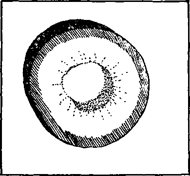

iiiiiiiiiiiiiiiiiiiiiiiiiiiiiiiiiiiiiiiiiiiiiiiiiiiiiiiiiiiiiiiiiitiiiiiiiiiiiii
in this issue
(H)
iiiiiiiiiiiiiiiiiiiiiiiiiiiiiiiiiiiiiiiiiiiiiiiiiiiiiifiiiiiiiiiiiiiiiiiniiiiii
every other WEDNESDAY
five cents a copy one dollar a year Canada & Foreign 1.25
Vol. XVIII-No. 464 June 30, 1937
•• OfQ) • 1111 —in ■.■!■■■ • 0>4Jm
..<rng.--------------------------------------
Water? 611
A Glimpse at the Creator’s Wisdom 611
Water Poisoned to the Limit 612
The Process of Contamination 612
To Sell All the Dope Possible 613
Where the Doctor Fills His Jug 613
Line Yourself with Aluminum 614
New York’s Underground River 615
The Flood at Newport, Kentucky 616
Better Not Have Dammed the Ohio 616 A Note to New Jersey's Governor 617 Putting Governor Hoffman
Why Should Religion
An Ex-Officer in
International Association for
Wholesale Murders at Addis Ababa 623 The Massacres of Addis Ababa
“You Did Not Bring Death” 623
After the Coptic Church Property 623
Sound Car Experiences
Sound Car Experiences
“Freedom of Faith” Temple
Jehovah’s witnesses in
“Jehovahites Pull Fast One on
Preachers Help Spread the Truth 633
Sundry and Divers Ups and Downs 634
A Jonadab’s Garden in Rhode Island 635
The Van der Plaegs Can Stand It 635
Invited to Enter God’s Rest 635
Believers Enter into Sabbath 638 ‘There Remaineth a
“That Which Passeth Away” 638
■ ■ 1 —. ..
Published every other Wednesday by
GOLDEN AGE PUBLISHING COMPANY, INC.
117 Adams Street, Brooklyn, N. Y., U. S. A.
Clayton J. Woodworth President Nathan H. Knorr Vice President
Charles E. Wagner Secretary and Treasurer
FIVE CENTS A COPY
$1 a year, United States ; $1.25 to Canada and all other countries.
Notice to Subscribers
Remittances : For your own safety, remit by postal or express money order. When coin or currency is lost in the ordinary mails, there is no redress. Remittances from countries other than those named below may be made to the Brooklyn office, but only by international postal money order.
Receipt of a new or renewal subscription will be acknowledged onlj’ when requested. Notice of expiration is sent with the journal one month before subscription expires. Please renew promptly to avoid loss of copies.
Send change of address direct to us rather than to the post office. Your request should reach us at least two weeks before the date of issue with which it is to tako effect. Send your old as well as the new address. Copies will not be forwarded by the post office to your new address unless extra postage is provided by you.
Published also in Bohemian, Danish, Dutch, Finnish, French. German, Greek, Japanese, Norwegian, Polish, Spanish, Swedish.
, Offices for Other Countries
British 34 Craven Terrace, London, W. 2, England
Canadian 40 Irwin Avenue, Toronto 5, Ontario, Canada
Australasian 7 Beresford Road, Strathfield, N. S. W., Australia
South African Boston House, Cape Town, South Africa
Entered as second-class matter at Brooklyn, N. Y., under the Act of March 3, 1879.
♦•$><£)•------------------------------------------------------------—------—---
Volume XVIII Brooklyn, N.Y., Wednesday, June 30, 1937 Number 464
WatCT? By Pennsylvania Correspondent
IN The Golden Age, recently, appeared an article by Doctor Hodge, of Kentucky, entitled “Water”. The multitudinous benefits and uses ascribed therein to that colorless and tasteless liquid are unquestionably of truth, and constitute knowledge that is very worthy of acquisition.
Details of the devilish business of polluting water for commercial enterprise are almost sure to upset the tranquillity of the average reader, and especially so if you live in one of the more populous centers where some form of chemical treatment of drinking water is deemed necessary.
Of necessity, however, the facts as stated can apply only to water in the pure and unadulterated state in which it issues from the purifying natural filters of the earth’s surface; and in which condition the great Creator certainly purposed it should remain for the benefit and comfort of His creatures whom He purposes shall enjoy everlasting life upon the earth.
Having thoroughly enjoyed this unusual bit of enlightenment from the therapeutical viewpoint, it would be very nice if the matter could be dismissed there with the positive
Purifying the water
A Glimpse at the Creator’s Wisdom
Before this happens, however, we are taking the opportunity to insert, while it will be appreciated, one redeeming feature from the engineer’s knowledge of water: Certain of its properties furnish the best of physical proof of the existence of a great, allwise Creator.
This scientific phenomenon, stated as condensed and as simply as we are able, is this: Water at 39 degrees, Fahrenheit, is at its greatest density, or weight, for a given volume. If it becomes
assurance that all water used for drinking purposes gave such beneficial results, as concerns the health and well-being of the human family.
Unless you are fortunate enough to have a good well, or spring, for your supply of drinking water, there is another side to the picture. It is the side known intimately to the filter plant chemist, and we are hesitant to intrude with it; for it is very sordid, and most unpleasant in its reality.
chilled a little more, say to 32 degrees, it becomes less dense, and lighter, for a given volume, solidifying into ice. That is why ice floats. Apply heat to water at 39 degrees and it also becomes lighter.
Why this seemingly strange contradiction of established physical laws? What power but that of Jehovah God would foresee the necessity for it, and arrange this peculiar property of water ? Were it not so, water in lakes and streams would not gravitate to the bottom just before freezing point is reached on the surface. The ice, having once formed on the surface, insulates the comparatively warmer water on the bottom from the cold, maintaining its temperature at approximately 39 degrees, or just above freezing.
Thus Jehovah has prevented certain disaster to the inhabitants of the earth, since the Deluge; for without this peculiar property of water, lakes and rivers would freeze solid to the bottom, and the most scorching heat of summer, that man could endure, would not suffice to thaw them out between the seasons.
Giving the hydraulic engineer his due, it is admitted that their efforts in building great reservoirs, dams and viaducts, for the control of water, have resulted in a greater measure of comfort and convenience to a large proportion of the human family. Would that their efforts were confined solely to changing the volume or courses of streams!
But devilish commercialism demands that our water for human consumption must be obtained from polluted streams, and, because it is thus obtained, must be endlessly doctored, doped and poisoned to the ultimate limit (for there is a limit, you will be glad to know), and that such limit shall be rigidly maintained in order that a few ultrarich manufacturers of certain mechanical devices, and their coconspirators, the poisonous aluminum crowd, may reap handsome profits on slow death; for anyone imbibing the alleged water after their devices and products have gotten in their dirty work is slowly and surely poisoned, and that not ignorantly, but willfully.
This should be very, very hard for the average person to believe; therefore we purpose to give an uncolored and straightforward account of firsthand observances in the filter plant of a large water and power corporation on the Atlantic seaboard. Readers may then judge for themselves; for what is true of this plant is true, more or less, of every municipal and commercial enterprise that happens to be using the same w’ell-known system of water filtration.
Surrounding the plant at a respectful distance is the usual company-owned town of several hundred inhabitants. There are springs and streams galore in the region which could be utilized for the drinking requirements of the entire community. But are they? The nature of the primary business—power—required an unfailing source of supply for steam boilers, which are an auxiliary source of power to a hydroelectric plant. The impounded water from the plant’s dam furnished the required supply, but in order to use river water in the extremely high-priced boilers a filtering plant was necessary.
Commercial reasoning being what it is, the possibilities of utilizing the abundant springs and streams of unpolluted water for drinking purposes were entirely ignored in favor of the more expensive and abominable system requiring the use of deadly poisonous chemical byproducts of the aluminum and powder trusts.
Accordingly, the filter plant was built and equipped with alum mixer, soda ash injector, chlorinator, and the usual chemical poisons. Without a doubt, their elaborate installation completed, the Devil, himself, sat back and grinned in anticipation of the assured slow death of creatures of Jehovah in yet one more community.
Who, at some time in life, has not paused by a rivulet or spring and been refreshed from its depth? (Psalm 110:7) How clear and cool! How odorless and tasteless! Follow the stream into the haunts of commercialism, and note what happens to those qualities. Musically it winds its serpentine course among the reeds and ferns to the meadow creek; thence to the broad river, into which it runs clear but a few feet before that pristine purity receives its first pollution —sewerage. (This, of course, would be avoided if all the people who find fault with Jehovah's witnesses for allegedly breaking the Sabbath, by going about with books, would themselves keep the other parts of the laws that were given to the Israelites. See Deuteronomy 23:12,13.)
With its identity as spring water almost gone, it enters the intake to the pumps of the filter plant, and is discharged into the sedimentation basins; at which point it meets with pollution Number 2: a stream of water at high pressure, charged to the limit with aluminum sulphate, a by-product of Mellon industry. The turbidity of the water usually determines the extent of this pollution, the usual dose being, for a normal turbidity of 25, about .600 of a grain of alum per gallon of water.
From the sedimentation basins it passes over a weir into the filter beds; thence through fifteen feet of graduated sand and gravel, which in itself would completely clarify the water without the use of the deadly alum, if the operation were unhurried. It then collects into the clear well; but it is now time for pollution Number 3: introduction of a jet of water heavily charged with soda ash. The normal rate of pollution for this phase is about .400 grain of soda ash per gallon of water.
Finally it enters the pumps, to be delivered to the storage reservoir for human consumption. Just as it is discharged into the main leading to the reservoir it receives the deadliest, most poisonous charge of all—chlorine; byproduct of Du Pont industry. This gas is so corrosive that only an instrument of solid silver is used to regulate it.
And so the liquid from our little rivulet goes to market, and reaches the water mains of commercialism. If you have followed the several pollutions in order, and can still call it water, you have an excellent imagination! Soup would be more appropriate! Nor would the familiar skull and crossbones, required by law of your corner druggist, on all poisons, be at all out of place on any container of the stuff!
But why don’t these poisons affect the health immediately? And why isn’t there an extremely unpleasant taste apparent? That is where the filter plant chemist comes in! The uninitiated may think that the chemist is required on the job to keep the water pure; and that’s just the idea that any water company would like its patrons to have!
However, everyone familiar with filter plant practices knows that tests are made, not to determine the purity of the water, but to determine when poisonous chemical pollution is approaching the limit, beyond which immediate harmful effects are at once apparent.
Any concoction containing powdered alum (alias sulphate of alumina), soda ash and chlorine gas certainly cannot be classed as pure. As to taste, another chemical, the trade name of which cannot, for obvious reasons, be mentioned here, is used to offset any bad taste. It contains dissolved carbon, and, unless the leopard can change its spots, is merely an additional poison.
With the health of an entire community depending on the accurate testing of drinking water, certainly a competent chemist makes these necessary tests regularly ? That’s what you are supposed to think! Competent chemists do not work for $75 per month, however; which is top pay for filter plant operators in the employ of the concern about which we write.
Hence, former plow-hands, fresh from high school, magically become full-fledged operators with as little as one week’s instruction. Thereafter he is considered competent to treat and make tests of the water himself. What’s the difference if he does merely copy the previously recorded tests-of the more experienced operator who preceded him on duty? which is often admittedly the case. That’s only a minor fraud, perpetrated by an ignorant and underpaid attendant! Hearken, now, to a major one, perpetrated by some of the boys in the higher-salaried brackets, and who certainly know better!
The most important test of all is the bacteria test, for determination of the presence of typhoid fever germs. This is made (?) by a company physician at regular (?) intervals. There are no records, of course; merely the doctor’s word that such tests have been made.
It is rather amusing to watch the good doctor obtain his supply of drinking water, by gallon jug, from a near-by spring. Not so amusing, however, to visit his office, time after time, as physical disability may demand, and note the bacteria testing apparatus unused in the corner, and under a six-month accumulation of soot and dust.
They do say, however, that he is a very good recorder of deeds for the county. Maybe there is criminal neglect here? We don’t want to influence anyone along that line of thought, but will let you figure that out for yourself after reading what follows.
Some time ago, a boiler engineer and his wife were taken ill and their cases diagnosed as “typhoid fever”. During the ensuing commotion over possible sources of the disease the usual statement regarding the purity of the local water supply was issued to quiet the rising fears of the populace. The wife died; and later several more persons were stricken.
Concurrently the disease appeared in a neighboring city of about 65,000 population. County and state officials became interested, and one day a gentleman entered the filter plant unannounced. (Visitors, other than company officials, are not allowed in the filter plant unaccompanied.)
After complimenting the new man on duty upon the general condition of the place, and the unusual clarity of the water, it was no trick at all, or rather no difficult feat, to obtain a sample of unchlorinated water from the clear well (he just happened to have an empty bottle with him). Four days later the county papers carried large headlines announcing that the source of the “typhoid fever” epidemic had been traced to a local water supply. And the good doctor took yet another good healthy swig from the gallon jog!
Anyone who thinks that corporations don’t put dividends above health, or even life itself, can mull over this curious fact a while: Filter plant operators, being what they are, will let the chlorinator get out of hand every now and then, and the poison charge may double or triple.
People soon start calling the office to inquire ‘what’s wrong with the water that it has such a funny taste’. A stock answer is that ‘it usually has a bad taste this time of year’. After the third or fourth call the operator on duty is asked to check his tests. The assurance of the $75 operator (unwilling to disclose his or his fellow’s mistake) that the tests are all O.K. is usually as far as it goes. After all, only the health and life of the public are concerned!
But this same water is used in expensive boilers! For this use it is necessary to know just what the parts per million of solids, sulphates, caustics, alkali, etc., are, in order to prevent serious damage to the interior of the boiler tubes. Does the $75-per-month operator make these tests? Not on your life! A $200-per-month man makes these tests!
Moreover, if there is a slight variation in the hydrogen concentration, or oxygen, there is a great to-do. Samples are immediately dispatched to the most expensive firm of chemists in the east. If their report substantiates the company chemist’s test the inhabitants of the community merely absorb a few more grams of poison of the required sort, that those boilers might enjoy a long and useful life. Seems ridiculous, doesn’t it ? But true, nevertheless! Men, women, children, are plentiful; but boilers are a trifle scarce!
Among Golden Age readers there is almost sure to be someone who will rise to the defense of aluminum sulphate with the stock argument that only a negligible quantity of the stuff remains in the water after it passes through the filters. They may also feel like defending the use of the deadly poisonous chlorine, too, with the usual argument that, being a gas, it frees itself from the water when allowed to stand open to atmosphere for a minimum of five minutes. In readiness for something of the sort, we circumvent it by referring such to tests of water, at normal turbidity. They will look about like this:
|
Turbidity (Raw Water) |
25 |
ppm. |
|
Alkalinity (Filtered Water) |
44 |
ppm. |
|
Chlorine (Filtered Water) |
.33 |
ppm. |
|
P H Raw Water 7.3 |
Tap 7.1 | |
|
Filtered Water 6.9 Chlorides (Filtered Water) |
12 |
ppm. |
|
Alum Rate |
35 |
grams |
|
Chlorine Rate |
15 |
see. |
|
Soda Rate |
36 |
grams |
Note the Chlorine and Chlorides tests! The Chlorine test is made to determine the excess chlorine gas remaining in the water, at the consumer’s faucet. The Chlorides test is made to determine the amount of chlorine gas that condensed into liquid, and has united with the water. One-third part per million and twelve parts per million do not seem like much of a quantity. Verily, it doesn’t want to be, either, of a gas as deadly poisonous as chlorine!
The point is that the tests show the percentage of liquid and gaseous chlorine remaining in the water after long hours of exposure to the atmosphere. That you drink! And, if the operator makes a slip and allows too much to pass through the chlorinator, well,—!! You can taste it; and you can go to see your dentist oftener! (They say that chlorine gas is good for a cold in the head; but who wants to have a perpetual cold in the head just to utilize a commercial poison?)
Line Yourself with Aluminum Sulphate
About the other contention of the Aluminum Trust, that the aluminum sulphate creates a “flock” on the surface of the water and gathers the sediment unto it, but does not pass through the sand and gravel of the filter bed—it is to laugh! Quite unintentionally, an old reliable firm of analysts has knocked this contention into the proverbial cocked hat.
No tests are made to determine the quantity of aluminum sulphate remaining in the water after passing through the filters. (Such tests, if made, would be extremely enlightening; therefore, are intentionally omitted from the routine.)
During the course of the year there forms on the turbine blades a hard scale. This is carefully removed when the turbines are dismantled for yearly inspection, and samples sent to the aforementioned chemists for analysis. Here is their analysis, as received, and translated from technical chemical symbols into plain English:
|
Si O2 |
(Silica) |
50.30 |
|
1 e2 Os |
(Ferric Oxide) |
32.80 |
|
AL O3 |
(Alumina) |
6.30 |
|
Mn O2 |
(Manganese Dioxide) |
2.17 |
|
H2O |
(Moisture) |
3.02 |
94.59
Note that the deposit is made up of over six percent of Alumina, alias Alum, alias Aluminum Sulphate! This becomes more noteworthy when it is understood that all water for boiler use is evaporated water. And, by far, the larger portion of alum remains in the evaporator and is washed to the sewer when the evaporator is flushed. No water enters the turbine blading as liquid. Therefore this is alumina that was carried to the blades by steam !
All of which proves that alum can, and does, go right through the sand of the filters, and even remains in the water after distillation in an evaporator. It is fairly certain, then, that the same chemically polluted water drawn from a faucet coats your insides with far more than six percent of aluminum sulphate.
Along with additional proof of statements made herein, we are sending a cross section cut from a replaced water pipe.* Just water, bearing alum and soda ash, was run through it for a period of about six years. It is of copper, one and one-half inches in diameter, originally, but now the opening is barely three-quarters of an inch in diameter. The corrosion is approximately one-quarter inch thick all around the inside of the pipe. Ever read those nice ads about using copper pipe ‘because it won’t corrode’? Like Doctor Hodge, the ad men were thinking only of water as Jehovah God purposed it to be, for man’s use.
The devilish combination of aluminum sulphate, soda ash and chlorine will corrode almost anything; and if you are a citizen of the company-owned and -controlled community of which we write, you can Just picture the above-mentioned sample of pipe, or write ye editor, who has it. He can tell you, from scale model, .just what the inside of your insides looks like, if you have been using water that is polluted with alum, soda ash, chloride of lime, and chlorine gas. You can then say, more fervently: ‘Thy Kingdom come; Thy will be done on earth as it is in heaven.’
Then, and only then, will suffering humanity be rid, for ever, of the Devil-actuated poisonpeddlers, who would pollute everything that the human family consumes, from Dad’s drinking water to the baby’s milk—at a profit !
* On file in the office of Th« Golden Age.
New York’s Underground River
TpVERY day New York city uses 913,100,000 of inspectors with huge stethoscopes is con-■J-J gallons of water, distributed through 4,686 stantly looking for and listening for breaks in miles of mains beneath the city streets. A staff the pipes. They usually find about one a day.
The Flood at Newport,
(Written just after THE flood water here was ten feet higher than was ever before known. Hundreds of homes that were considered absolutely safe were in the water, which the sewers could not carry off. In fact, these were a hindrance; for from them water came into many houses which did not get much from the street. If the water had risen three feet higher it would have gotten into my basement, and the most of East Newport would have been flooded, as the backwater was coming near this part of the city.
One poor widow living on Front street has lost heavily. It is impossible to conceive how terrible are the conditions. People had put their household effects on the second floor of their homes and had gone away, thinking their goods were safe, because water was never known to rise to the second floor. But in some cases the water went over the roof; in others it went nearly to the ceiling. Those who had attics and stayed at home saved their furniture by moving it to the attic. Some frame houses were swept away, furniture and all. Others were turned upside down; still others were carried blocks away.
It looks as if a cyclone had struck the lower parts of Newport and Dayton. Garage roofs were taken off and landed in yards. The clay mud is from one to three inches deep in the houses. The congoleum rugs will not come up from the floors, but tear in strips when handled. Wool rugs of good quality can be cleaned, however. All the furniture goes to pieces, except the solid oak or walnut.
Iron bedsteads came out all right. One friend who had six rooms with furniture has now six chairs and four pieces besides the iron beds. A cyclone would not have been more destructive. Most people carry tornado insurance. Very few carry flood insurance; and these only to seven or eight feet, because that had been the highest heretofore. Words cannot describe the awfulness of the time.
The water was very slow in going down. No light, no heat, no gas, and no water! I was spared the lack of water and light; for I had two lamps, and had laid in some oil. I also had a heatrola.
The terrible things that are coming so fast, one after another, lead me to believe that the end is near. Through it all, however, I did not fear; for I knew that the angels were protecting me. I had sixteen people, flood refugees, up on
Kentucky (Contributed) the waters subsided)
my second floor. Almost every one helped out, or the people could not have been cared for.
School will not reopen until March; for some school buildings were flooded, and others are being used to house the people. So many homes have been destroyed that places cannot be found for the homeless. Some went over to Cincinnati; some to the country. Those who own homes which have not been condemned are slowly going back to them. But oh, the terrible job of cleaning those clay-covered houses! They have to be washed two or three times; and even then they look like clay.
Damming the Mississippi
Tp A. Clogston, of Illinois, is puzzled by the • many new dams being built across the Mississippi, for the benefit of navigation. The dams could carry highways, but don’t. The bridges require tolls. Clogston thinks that in that case it is the people, and not the Mississippi, that are dammed. He says in part:
Just why a great government would permit private bridges and toll gates on the national highways and then spend millions of tax money to keep a few private steamboats going is, of course, best known to the beneficiaries of these benevolences. At the present time the government is building a number of dams in the river, and a system of locks, so they can keep the channel at a certain depth throughout the year by impounding the water so the precious steamboats can run. For the money put in dams they could buy all the boats afloat on the river and sink them, and then the people would be millions or billions ahead. But that would not suit the contractors. Even this monumental injustice to the people is rubbed in when the sites for the dams arc chosen. The dams are usually located in places remote from the highways, and seemingly so that the people may not get any benefit for the millions spent. Each of these dams could carry a highway as well as not, but none of them do. All the people get out of them is the privilege of paying for them.
Better Not Have Dammed the Ohio
AT THIS distance it looks as if the government might better not have dammed the Ohio, as was done here and there all the way from Pittsburgh to Cairo. No stream can flow freely when it is choked with dams. The dams canalized the Ohio; and though it was good for the coal companies around Pittsburgh, for it enabled them to get their products to market cheaply, it is a question, after all, if it was not a curse to the country.
A Note to New Jersey’s Governor By Engracio Alinsod (Philippine Islands)
DO YOU not know that Jehovah has a visible organization on earth called “the remnant” ? They are Jehovah’s witnesses (Acts 15:14; Isaiah 43:10-12), the harmless people whom you persecute mercilessly. Are you an atheist or godless?
Search the Scriptures and you will find that the clergy or the hypocrites, including the politicians and Big Business, constitute the big Satanic organization known as “beast” or “antichrist”. The Catholic Church doctrines are based upon lies and blasphemy against the very God whom they falsely claim to represent. Being tormented by the truth you, too, fulfill the Scriptures. You will only gnash your teeth.
Let there be persecution. It will fortify the position of Jehovah’s witnesses.—Matthew 5:11,12; Mark 13:9; Revelation 2:10; Zephaniah 3:8.
The basic structure of the Papacy is cankered and its collapse is momentarily expected. How can you persecute us effectively, since you only increase fast our number?
Presidential timber (?)
Only a short time ago, I was a Catholic approving in principle the cold-blooded persecution of Jehovah’s witnesses in return for the privilege of kissing the feet of graven images. Damn the images. The ten commandments of God in the old covenant in Exodus 20 were secretly falsified by the Catholic Church. The storm of truth, thanks to persecution, is sweeping away the refuge of lies. The Catechism is false. The true word of God is the Bible.
There is the testimony of history. Catholicism and democracy can never go together in harmony. Catholicism, the prostitute mother of all inquisitorial power and iniquity, will corrupt America and cause her downfall. The pope, who baffles the best physicians of the world today, will give you politicians trouble unless you likewise prostitute your own conscience and follow him blindly to destruction.
The gospel of the Kingdom cannot be stopped. God’s will prevails. Jail all of Jehovah’s witnesses if you want to. God will save His people.
Putting Governor Hoffman on the Spot
B. Zyciiol, hearing that six of his neigh-• bors, who had visited a convention in Newark, had been jailed in Governor Hoffman’s state, wrote the said governor on this wise:
It has been brought to my attention that some six Detroiters, who went to Newark [N.J.], where with many others they showed their faith by their works, just as Jesus and the apostles did, in house-to-house Christian work . . . were thrown into prison by clergy-inspired two-by-four-mentality politicians of your state.
Now, Governor, it is time you and all other politicians of your state wake up! You know you can’t let those modem Pharisees ride on your back indefinitely. It was not so bad in the Dark Ages, when few politicians could read and write and so had to do as the clergy told them, but in this day and age I can’t imagine anyone’s being so ignorant as to dig their chestnuts out of the fire—and then they laugh at you for doing it!
As a Catholic I wondered what was the matter in Mexico, Spain, etc., but now I can see. They just got wise to the hypocritical priests, and threw them off their back; just as I got wise and read Judge Rutherford’s book Intolerance and now I know that all priests are liars. Say, Governor, it would do you a lot of good to read it, too. It will show you great respect for God and the Bible, but little use for the clergyman.
Of course, you can continue as you are, but if, as those Jehovah’s witnesses say, there are over 250,000,000 of those books and booklets in circulation, 150,000,000 in the United States, maybe you will, some day, get a little surprise. We had some of those books.
Now, hearing of the unjust arrests, the people are reading them.
We are fifty-fifty Catholic and Protestants in Mr. C----B----'s neighborhood, who is my friend and is
in prison, with others, in Jersey City. We will see that his family is taken care of. While you think that you are punishing them for thirty days in prison, well, it’s just the opposite. I wish I were with them now. It is such a happy privilege to suffer for the right thing, and especially when one knows one is serving God. ’
Now I notice a lot of ballyhoo about those “Jehovah’s witnesses’ ” not saluting the flag. Well, what’s wrong with that ? They say God comes first and all the time. I think if you read the Declaration of Independence you will see somebody else made God first, and it might have been your great-grandfather.
I saw plenty of flag-wavers and their wonderful work in 1917-18. Yes, the ever-ready-to-“bless” clergymen. I was a member of 125th Inf. 32 Div. I met a number over there of N.J. 29 Division buddies; they can bear me out. We were “blessed” five different times, five different fronts. Originally 3,000 strong, in seven months we received 3,700 replacements. The flag-wavers and “blessers” were from twenty to fifty miles from the front.
So, now, Governor, it’s time you investigated that bunch around Jersey City, and sec that those who do good to their fellow men are protected, and not persecuted.
Why Should Religion Avoid Controversies?
IN THE Post a recent news story told of the arrest of a number of “Jehovah’s witnesses” at Lagrange, Ga.
In these modern days many of us pride ourselves in the “great strides” of Christianity and civilization, and in the departure from “superstition” and “childish” faith, which simply means that there are few who will dare to “defend the faith once delivered to the saints”.
Truly these “Jehovah’s witnesses” must be rejoicing that they are permitted to suffer the same sort of treatment that was accorded Christ and the apostles.
Christ was apprehended by the religious people of His day but He was not accused of preaching the Gospel. He was accused of “spreading sedition against Caesar’s government”.
These “Jehovah’s witnesses” were not accused of delivering the “message of the establishment of the kingdom of Christ”, which they were actually doing, but were falsely accused of “spreading Communistic doctrines against this and other ‘Christian’ governments”.
Christ was apprehended and accused by the recognized religious teachers of His own day.
Jehovah’s witnesses were the victims of a “tip-off” on the part of the clergy of Lagrange, who attached to them the false accusation of being Communistic.
At least there is a parallel here.
I fear we have been so busy over the material actualities of life and its present-day problems that we have been overlooking just such opportunities as these Jehovah’s witnesses are taking advantage of—that of spreading the message of the establishment of that long-promised Kingdom that Christians—in form at least— have so long prayed for.
Church leaders have been so busy trying to find a common non-controversial ground of action that they have come to ignore the fact that true Christianity came into the world in the thickest clouds of controversy and that without such controversy it must of necessity wither and die.
The efforts on the part of the church to avoid controversy seem to me more like cowardice and a yielding to the course of least resistance.
Jehovah’s witnesses, as much as they may be despised by the so-called “religious teachers” of today, at least have the courage of their convictions and enough of that simple and childlike faith in God to face a cold and unreceptive world and undergo much persecution in behalf of their long-promised King.
It is such courage and such simple faith manifested that has always been the forerunner of every new dispensation in the history of mankind.—Bays Danforth Cather, in Birmingham (Ala.) Post.
Gloria’s Vacation
Gloria Vanderbilt had her vacation in 1936.
It cost $4,250. Rent for the 31 days was an even $1,000; food was $700; coal was $65; newspapers, $15.17, etc. Gloria got through the month. She is 12 and has an estate of $4,000,000.
An Ex-Officer in the Italian Army
VBoccotti, of Wisconsin, was apparently • at one time a member of the congregation presided over by John C. O’Hair, North Shore Church, Wilson Avenue and Sheridan Road, 1011 Wilson Avenue, Chicago, Illinois. On January 25, 1936, Mr. O’Hair wrote Mr. Boccotti as follows:
I find your letter upon my return to the office. You Were in bad shape when you were in the Catholic religion, but you were far better off than following Judge Rutherford; for he will surely take you to unending perdition. I heard Pastor Russell a number of times and read all of his books. I have no hesitancy in saying that he was a true, loyal servant of Satan. And those who follow him will follow him to the “second death”. I pray that God will take away your blindness. With Christian love and best wishes, I am Most cordially yours,
[signed] J. C. O’Hair.
To this letter Mr.
Boccotti, under date of February 13, made the following reply, which is recommended to the careful consideration of those who are thinking of going into the chaplain business:
The “religious” question impressed itself deeply on my mind
I received your letter of January 25 and would like to set you straight on one or two points. I’m not following Judge Rutherford, or any other man on earth, but I am a sincere follower of Christ Jesus and a witness of Jehovah’s truth and name. Jehovah said that He would take a people out of all the nations for His name, and by His grace I am one of these.
Let me tell you something of the history of my life ■—how I came to be a follower of Christ Jesus.
In my youth I was never in favor of religion. After I heard something about the Spanish Inquisition I dropped the whole matter and devoted my life to sports and amusements, until 1914, when I was called to serve in the army. Still I did not care about religion. In 1915, November 11, we were ready for the first battle. There were one thousand soldiers ready to start out for the first time. While going up Mt. Lana I noticed a priest under a tree, dressed in black, with a tin can in his hand, sprinkling so-called holy water on the soldiers as they passed, for which purpose he used a brush. A soldier remarked, “Here we are—, and now we are going for the last trip.” I felt as though I had an electric shock, and my legs could hardly carry me any farther. A very deep impression came over me, on the “religious” question.
Before we got to the position for battle the Austrians discovered our lines and started bombing the head end. It stopped our progress for about four hours.
It was snowing. We were covered with snow, cold, wet, and could hardly hold our rifles. Then the order came to go forward. When we got to the top of the mountain we saw a scene of misery. Hundreds of soldiers lay on the ground, dead. We were given orders to save those we could and gather at a little village called Pala, where the kitchen was in a safety zone. There we would be organized for the next battle. As I crossed the field of battle I heard a cry, “Vile! Kill me!” I saw a soldier with both legs cut off, who wanted us to end his suffering. The “religious” question impressed itself more deeply upon my mind.
For a short distance we could not walk on the ground, but had to walk
on the bodies of the dead. When we reached the safety zone my comrade, a corporal major, eyes filled with tears, said, “How are all our friends?” I replied, “I walked over a good many of them, and do not know how many are alive.” “Religion” still was on my mind, with the vision of that priest always before me.
After our company was gathered there were only 90 alive out of 250. The next battle I was in was in May 1916. A General Caputo was in command of the second division. He sent command for us to get a position on Mt. Forame. Our captain refused. He was taken before the court-martial. The same order was given to the company on our right. Before the battle took place the priest was there. After he “blessed” the company they went to battle. Many were killed, including all of the officers. Only a few soldiers remained. The bodies of soldiers were hanging on barbedwire fences like clothes on a line. The priest evidently
did not have time to get to the safety zone. He was wounded. Still the “religious” question absorbed my attention. I wondered how it could be possible that on the other side there was the same action of “blessing” and killing.
Then I heard a priest called ‘ ‘ Father ’ ’ Samaria, who preached among the soldiers, putting hatred into our hearts. I -wondered if there really was authority from God for such bloodshed. Meanwhile I was made a sergeant.
About this time an Austrian Catholic priest was found in Cartina Dompezzo who had a telephone connected from his altar to the Austrian firing lines, and told the Austrians where our company was. Oh, how true are the words of Jesus in John 8:40-44! Then, by the Lord’s grace, I was discharged from the army.
I went home and my mother wanted to send me to church, but I said: “Ma, I don’t believe in churches any more; I don’t believe in priests any more. I didn’t want to kill those poor Austrians. I never knew them. Those people claim to represent God. I do not believe there is a God! ’ ’
Oh, how ashamed I was when later I read in the Bible that only fools say in their hearts “There is no God”! I also found the words, ‘When the blind lead the blind, they both fall into the ditch.’
In 1920 I came to this country, and feeling that I was doing wrong in not going to church, I started to go to church again, here and there, until 1925.
One day a lady handed me a proclamation issued by the Watch Tower Bible and Tract Society in Columbus, Ohio, at a convention in 1924. It condemned all the churches, Catholic and Protestant, for taking part in the World War, stating that in so doing they served the Devil instead of serving God. I had plenty of physical facts to confirm this.
On another occasion I was walking the streets in New York and saw people dressed in military clothes playing as a band. It was the ‘ ‘ Salvation Army ’ ’, who were ‘doing good to the poor’. I was always sympathetic to the poor and contributed a few nickels here and there until I discovered that they also helped the war. I decided “Hands off the Salvation Army, too”.
So, dear sir, your letter did not discourage me. It encouraged me to co-operate with Judge Rutherford and Jehovah’s witnesses all the more and to put on the whole armor of God and follow in the footsteps of Christ, bringing the Truth to the people.
Jehovah’s witnesses are the only people on earth who stand for truth and righteousness. I wish all my friends with whom I fought in the war could have a knowledge of God’s provision as set forth in the Watch Tower publications. When Judge Rutherford shows up the hypocritical clergy in his talks he never makes it as strong as I would like to hear it.
Let Haman hold on the rope a little longer. Mordecai has not quite finished his ride through the city. Then he is going to the King’s palace—but read it for yourself in the book of Esther.
Do not go to the trouble to “pray” for me that my “blindness” may be removed. The Lord revealed to me through His prophet Isaiah “who is blind, but my servant?” I am blind to everything but Jehovah’s purpose, by His grace. I received knowledge and comfort from Jehovah and Christ through the Watch Tower publications.
Pioneering in Virginia (Contributed)
TT HAS been very warm and I have found a way to sleep in my car; so I am not so uncomfortable at all. I park the car near the house of the family who live near the spring. There is only one child; so the place is very quiet. It is a beautiful spot, on a hill, where a church used to be. It blew down in the last hurricane; now when they have meetings they put the benches under the trees in the open. On weekdays I use the benches for my office and various household tasks. Below, in the driveway, there is a beautiful natural spring, with plenty of healthful water all the time, the best in Virginia. It is much warmer here than in Jersey; I do not have to wear a coat yet. When the sun shines on the spot near the spring it is too wonderful for words. Today I got caught in the rain, and I was so happy, as I found everybody at home and placed literature en masse, for the first time. As I went on the roads got softer and softer, making it a hard pull back to camp.
Drugged the Wrong Man
FOR reasons best known to themselves, somebody drugged Judge Smiley, of Texas, three days after he procured the book Riches. His captors put him first in a padded cell and then in an insane asylum. As soon as the effects of the drug wore off he got out and immediately arrested the owner of the sanitarium and tried him for insanity. In America it is not always best to get too fresh and be too cocky. There are still Americans, and if they ever awake and get going, the political scum and riffraff that think they have the whole country by the nose may get the surprise of a lifetime.
International Association for Training of Murderers
THE Western Press Committee, in eleven consecutive months, collected 28 clippings showing fatal use of guns by children. One crawling infant tipped over a shotgun and killed his uncle; a child of eight years killed a baby; another child of eight killed his brother of nine; a child of ten killed a child of six; a boy of twelve killed his father in anger, using the rifle his father had given to him; two boys of fifteen quarreled and one shot the other dead; a woman sitting in an automobile was killed by a boy shooting at a target; five children committed suicide. If International Murderers had the gumption of the cigarette makers they would be able to more than offset this by attractive posters, pasted everywhere, showing that no boy or girl is worth bringing up unless constantly parading around with firearms.
“Nobody knows how many deaths there are each year from guns in the hands of children of 15 years or less. Two individuals in California and New York collected clippings of 109 such cases in eleven months of 1935. Parents, playmates, suicides, were the victims. ‘Accident’ is the wrong name.
“Of 109 cases, there were thirteen cases of intentional murder—seven fathers were killed, one stepfather, two mothers. Ten cases were suicides, the ages fourteen to eight.
“Gangs of three to six children, both boys and girls, planned and executed robbery with guns. The members of the gangs were of all ages from fifteen to eight.
“Games of outlaws, cowboys, sheriffs, Indians, soldiers, had many fatal results.
“Two cases were intention only, not action. The next to the youngest case was a boy of six who put on his uniform, took his toy gun and went to the police to ask their help in finding who killed his dog, so he could kill the offender. The youngest was three, who went to the police and said, ‘Come on, let’s you and me go shoot some robbers.’
“A girl thirteen years old was killed by a playmate after rehearsal of a school play. The gun was a property gun for the play.
“In the first eleven months of 1936, one person collected clippings from a limited number of papers, of 39 deaths from guns in the hands of children 15 years of age or less than 15. Four more deaths resulted from other weapons in the hands of children. Six children committed suicide, the youngest being nine years old. Forty-nine tragedies in a limited field. There are other cases of torture, beating, drowning, threatened hanging. Gangs and mobs of children engaged in kidnaping, beating, and burning with hot wire, the burning reported as 40 applications. No figures are available for the United States.
“Five mothers, three fathers, and five grandparents and uncles were killed by angry children. Brothers, sisters and playmates were victims. The youngest victim was two months old. The youngest killers were four and three years old. Even if children under 12 are counted out, those of 12 to 15 intended to kill and were old enough to know what they were doing. They had known for years what guns were for, and they knew where guns were within reach.
“A boy 15 years old beat his mother to death with a hammer. A boy of 14 stabbed a child of 5, threw him into a creek and stood on him to drown him.
“The movement to restrict or limit the possession of guns by adults is gaining adherents. The movement to keep them out of the reach of children is altogether different, and is an immediate necessity. ‘Accident’ continues to be the wrong name used by parents, headliners and coroners. Stop saying ‘accident’.”—Alice Park, California.
The American Game Association was originally called the American Game Protective Association. The only sense in which the word “Protective” ever applied is that the game were to be protected from starving to death by being shot ahead of time with automatic and pump guns. The founders were the following concerns, all of whom are interested in selling automatic guns and cartridges, and not interested at all in game: American Powder Mills, E. I. du Pont de Nemours Powder Company, Marlin Fire Arms Company, Peters Cartridge Company, Remington Arms Union Metallic Cartridge Company, Selby Smelting and Lead Company, J. Stevens Arms and Tool Company, United Lead Company, Western Cartridge Company, and Winchester Repeating Arms Company. It is like the Roman Catholic Hierarchy’s organizing to “uphold freedom of speech and of the press”.
The British Air Raid Precaution Department has issued Handbook No. 1, entitled Personal Protection Against Gas (H.M. Stationery Office, 6d. net). It is divided into the subjects of ‘Nose Irritant Gases (Diphenylchloroarsine)’, ‘Lung Irritant Gases (Chlorine and Phosgene),’ ‘Tear Gases (Chloracetophenone, Ethyl lodoacetate and Bromobenzyl Cyanide),’ and ‘Blister Gases (Mustard Gas and Lewisite)’; and if it wouldn’t make you pray for God’s kingdom to come in full power in Armageddon and destroy the whole devilish arrangement now calling itself civilization, nothing would.
“Boiled down to the core, the struggle in the international arena today is centered around the question of raw materials and markets. In a word, the entire foundation of the trouble is to be found in the maladjustment of trade, or the exchange of commodities, both nationally and internationally, plus the exploitation of colonies by imperialist powers.”—Commerce and Finance, New York.
Spanish People Distressed and Desperate
THE Spanish people are distressed and desperate. They are fighting the wealthiest, most powerful, most unprincipled, wickedest organization that ever existed on this earth; an organization actually and fully representing the Devil, but claiming to represent and to speak with the supreme authority of Jehovah God and His Christ. Small wonder they are confused. What they need most of all is God’s kingdom.
At the time the war broke out Jehovah’s witnesses were rendering valiant service to their King throughout the Spanish peninsula. For the present their work is practically (though not entirely) at a standstill. The following is taken from the Year Book of Jehovah’s witnesses for 1937, and will be read with interest by all:
The people are fighting for dear life; for they well know that if the Hierarchy should win, it will mean a return to slavery and the conditions of the Middle Ages and the Inquisition for them. If it is true that the people’s anger has at times gone to extremes and vented itself against religion by the burning of churches and convents and by the killing of priests and monks, it must be stated emphatically that the latter “had asked for it” and that what has come to them was but their due.
One may also say with equal emphasis (as the Communists have published in a manifesto) that their fight is not against religion as such, but against those who under the cloak of religion have betrayed the people and are endeavoring to continue to exploit and oppress them as in the past. As a matter of fact, they have not once interfered with the free exercise of the true worship of God, as is borne out by the fact that during the first six weeks of the civil war several German pioneers were active in Madrid and others have continued till this day in other parts. One of those working in Madrid placed over 2,000 booklets and numerous books and copies of Luz y Verdad in one month.
On the other hand, most of our pioneers working in districts which fell under the power of the rebels were bitterly persecuted and imprisoned for periods ranging from ten days to three weeks by those who make such a great palaver of serving “God, country, order”, etc.
It is impossible to foretell with certainty which side will win, but even though the Jesuit-Fascist side should succeed in defeating the people with the help of certain foreign powers that have intervened in the conflict in violation of every international law, they will not be able to count the victory theirs. The people are determined never again to submit to the yoke of the clergy, and on several occasions have expressed their determination to rid the country once and for all of these enemies of mankind.
Courage in Presence of Death
A DISPATCH from Lisbon explains that in the war between the Hierarchy and the people in Spain most of the workers showed no fear of death but asked to be comforted by priests:
Whereupon, priests on the rebel [Catholic] side dropped their guns, changed their uniforms for Catholic raiment and officiated. Before the doomed men were lined up before the firing squad both the ‘ ‘ reds ’ ’ [workers] and the priests [murderers] wept bitterly and embraced.
Chromium Mists and Fumes
OTHER metals than arsenic and aluminum are also dangerous to human health. It is now discovered that the mists and fumes which arise in the process of chromium plating cause chrome ulcers at broken places in the skin and perforate the membranes of the nose. These afflictions take months to heal, and as chromium plating becomes more and more common these troubles are becoming widespread.
Northern Africa
THE New York Times, in a Paris dispatch accredited to the London Times, gives the following details of what happened in Addis Ababa, Ethiopia, after the attempt on the life of the viceroy, Graziani:
For three days after the attempted assassination, every able-bodied Italian in the capital appears to have been encouraged to slaughter natives. The number of victims of this mass slaughter is said to have been about 6,000. With rifles, pistols, bombs, knives and clubs given out for the occasion, gangs of Black Shirts and workmen went through the native quarters killing every man, woman and child they found. Others, with flame throwers and tins of gasoline, set fire to the flimsy huts and houses and shot down those who tried to escape.
Let nobody marvel at these scenes of Fascism (Catholic Action). They would be world-wide if the pope and Mussolini had the power to make them so. They are fully approved at the Vatican, which is making full preparation to take over the Coptic Church of Ethiopia, lock, stock and barrel. It is known that the pope’s plans to do this are at least fifteen years old, indicating a full expectation that, sooner or later, Italy would seize the country.
UNDER this head the New Times and Ethiopia News, published in London under date of April 10, 1937, reports an eyewitness as declaring that not less than 30,000 Ethiopians were massacred in Addis Ababa following the attack on Graziani. Survivors were not allowed to take up their dead or weep over them, under penalty of being shot, imprisoned or banished. In the massacre naked women were scourged to death under the eyes of their husbands and brothers. Little children were crushed to death under the heavy boots (godasses) of the Fascist troops. The pope’s plans for making Abyssinia a Roman Catholic country are ‘coming along nicely’.
NINE countries will strive to agree on methods for preventing the entire destruction of wild life in Africa. Large parks will be formed, and improvements will be made in hunting regulations and the use of fires, flares and other devices. It is anticipated that there will be complete prohibition of certain unusually deadly weapons and methods of capture.
A DISPATCH from Addis Ababa, Ethiopia, states that in “the newly-opened cathedral” (which may or may not have been a Coptic church) the Roman Catholic archbishop Giovanni M. Emilio Castellani told the viceroy Rodolfo Graziani, “You did not bring death, but life, here; not war, but peace.” The account says that the cathedral was thronged with hundreds of Coptic and Mussulman natives. Probably many of their relatives were slain, and some of them had the skin burned off their faces with Italian poison gas, but it was all life and peace, according to the archbishop.
WHEN Italian troops overran Ethiopia one-third of the arable land of that country was owned by the Ethiopian Coptic church, the priests of which have not a little bit of use for Roman Catholicism. A missionary commission named by the pope is now working on a scheme to get this property away from the Copts and into their own hands, and, with Mussolini to back them, will no doubt succeed.
A REPORT several thousand words long from an Ethiopian correspondent to Dr. Martin, the Ethiopian minister in London, declares that the able-bodied men have left the cities and towns and are in the mountains. When these men attack the Italians the latter retaliate by killing the old men, women and children left in the towns, and have, as a matter of fact, so killed more than 5,000.
JEWS were flogged in Tripoli, by command of the Italian authorities, for failure to keep their shops open on Saturday, in violation of their consciences. The floggings, ten strokes with a whip made of pleated leather, were made in the open market place.
AFRICAN parents still sell their daughters in marriage, sometimes to old men with two or three wives. One girl in love with a youth was sold to such an old man, and when he endeavored to beat her into submission she took her own life.
Standing Mute
IN The Nation James T. Farrell decorates the
Roman Catholic Hierarchy in a way to call forth the admiration of all truth-lovers:
The Roman Catholic church has been built and defended not only with prayers and the will of the Almighty but also by means of blood and the sword. Neither the Holy Ghost nor Saint Peter ever contributed as effectively to the defense of the papacy as did, say, the Frankish king Pepin and his great son Charlemagne, who restored the weak Pope Leo III by force of arms. Down through the ages the Roman Catholic church has balanced prayers with the rack, canonization with the might of the sword, the power of wealth and oppression with appeals to the dreams and ignorance of the masses. It has, by the variety of its instruments, weathered the storms of centuries. Revolutions have come and gone, but Mother Church has remained the pillar of Christendom. In Spain today she stands with gun in hand defending churches which have been turned into arsenals. Her priests lay down their weapons to grant absolution to those who are about to be massacred by rebels wearing the badge of Mary on their sleeve and by those great defenders of Christianity, order, and authority—Mohammedan Moors. And the Vicar of Christ gently restrains them, forgives the “reds,” and tacitly gives his benediction to the slaughter. The American Catholic press backs up the rebels.
Though Hitler is a Catholic, yet he is a loose one, and some of his men are still looser. One of them, a Dr. Jam, in a book published last August entitled “The Catholic Church, a Menace to the State”, has the following paragraph [he must have been reading history, but manifestly not the Associated Press’ history of the papacy, which is wholly complimentary to that festering sore]:
The lust of the Catholic Church for world control is an arrogant challenge of the most insolent kind, when one keeps in mind how rotten this system is, how reactionary, extremely intolerant, inimical against science, deadly to freedom, spirit and culture, builded up on falsehoods of historical enormity, on nothing but lies and frauds as fundamentals of its organization; furthermore when one keeps in mind the wicked, accursed past of the Catholic church, revealing the most ignominious, infamous, filth- and blood-covered register of sins which the world’s history can show. There is no people on earth, no institution in the world, that has waded so deeply in human blood, unrighteously shed, and so deep in the mire of many vices and crimes as the Catholic church, so that moral degeneracy and repulsive criminality are written on her forehead as her unerasable characteristic mark.
IN THEIR slobbering history of the papacy recently published in many American papers, The Associated Press stands mute on these and a million other things it could tell the American people about this Italian camorra, but it does not dare to tell what it knows or could know. It wants the papacy to gain full control of America, so that, as the swag is divided, it can claim its Judas’ share.
Ex-Senator James A. Reed, of Missouri, could tell The Associated Press something about these things. It isn’t so long ago that in a public address, carried, probably, in at least some of the Associated Press papers, he said.
From the fall of Rome in the 5th century stretched a night of a thousand years. The last vestiges of liberty were obliterated. Everywhere tyrants ruled with merciless cruelty. These monsters pretended that they were appointed by Almighty God to rule over the masses of men. They proclaimed the infamous doctrine that the people were so debased as to possess neither the right nor ability to order their own lives, and so ignorant as to be incapable of thinking rightly on any subject secular or religious, and, hence, should not be permitted to utter their thoughts; to meet in peaceable assemblage; to worship God according to the faith of their souls; to follow avocations of their own choice; and that their property, such as they were permitted to hold, should be subject to the will of their overlords. In a word, the monarch asserted that he was divinely appointed to guide and control, regulate and govern the ignorant masses in all of their life activities ; that the people were mere wards of the state, subject to the will of the monarch, his satellites and lackeys. . . .
Always, the possessor of power insists that he is the father of the people, that he is wiser than they are and, hence, imposes his will for their protection and benefit. That can be accomplished only by force, and government by force is despotism, regardless of the mask it wears, or the name it bears.
The paternalistic governments of the past ruled by force. Paternalistic governments of the present rule by force. In the past they imposed their decrees by fire and sword, by scaffold, rack and thumbscrew, by collar, wheel and chain. They tore the flesh of their victims with red-hot pincers.
They burned them alive at the stake. Innumerable multitudes were herded into armies and sent to cruel death to satisfy the ambition, greed and lust of paternalistic masters. Myriads of victims were thrown into loathsome prisons to rot and die without charge to answer, or possibility of trial and vindication, and if brought to trial were taken before corrupt judges for unjust sentences.
A recorded lecture
Exposed
(H)
by Judge Rutherford
JEHOVAH’S capital organization is His kingdom under Christ Jesus, and is called Zion; and Christ Jesus is the Head and Chief Foundation Stone of Zion, concerning which it is written: “Therefore thus saith the Lord God, Behold, I lay in Zion for a foundation a stone, a tried stone, a precious corner stone, a sure foundation : he that believeth shall not make haste.” (Isaiah 28:16) That same rock or “stone”, Christ the Messiah, is the One whom the worldly religious leaders have refused, and have set up doctrines contrary to Him, and therefore it is written: “The stone which the builders refused is become the head stone of the corner.” (Psalm 118: 22) By His prophet Jehovah again mentions the Messiah as a “stone” upon which His building is erected: “Hear now, 0 Joshua the high priest, thou and thy fellows that sit before thee: for they are men wondered at; for behold, I will bring forth my servant, The BRANCH. For, behold, the stone that I have laid before Joshua: upon one stone shall be seven eyes: behold, I will engrave the graving thereof, saith the Lord of hosts, and I will remove the iniquity of that land in one day.” (Zechariah 3:8,9) In the prophecy of Isaiah the mighty Messiah is called both a “rock” and a “stone”: “a stone of stumbling” and “a rock of offence”. (Isaiah 8:14) This shows that the words “stone” and “rock” are used synonymously and in a symbolic way. The apostle specifically applies the “stone” or “rock” to Christ Jesus: “As it is written, Behold, I lay in Sion a stumblingstone and rock of offence; and whosoever believeth on him shall not be ashamed.” —Romans 9: 33.
Peter, being a Jew, was familiar with the text of the prophecies concerning the coming Messiah, the Rock. All Israel was at that time looking for the coming of the Messiah in fulfillment of Jehovah’s promise. The names Messiah and Christ mean the same thing, that is, the Anointed and Chief One of Jehovah God. Andrew was one of the devout Jews, and when he had seen Jesus Andrew expressed himself in these words: We have found the Messiah, the Christ.’ (John 1:41) When Jesus saw Peter He said to him: “Thou art Simon the son of Jona: thou shalt be called Cephas, which is by interpretation, A stone.” (John 1:42) Peter then became a disciple of Jesus.
The Pharisees, who were the clergy of that day, practiced the Jews’ religion and they continually tried to entrap Jesus. They were hypocrites, claiming to represent God, but, as Jesus told them, they represented the Devil. (John 8: 44) Jesus warned His disciples to beware of the doctrines of those religious clergymen. Then Jesus, addressing himself to His disciples, said: Who do men say that I am!’ Some, they answered, said that He was one of the prophets. Then Jesus said to them: “But whom say ye that I am?” Jesus had not told them that He was the Messiah. Peter answered: “Thou art the Christ [(Hebrew) Messiah; the Anointed of God], the Son of the living God.” (Matthew 16:13-16) Thus Jesus was identified as the Rock or Stone, about whom the prophets had written.
Previously, as above stated, Jesus had named Peter “Cephas”, which also means a stone. When Peter gave the answer above quoted Jesus addressed Peter: “Blessed art thou, Simon Bar-jona; for flesh and blood hath not revealed it unto thee, but my Father which is in heaven.” (Matthew 16:17,18) The very language here employed by Jesus shows that He did not refer to Peter as the Stone upon which His church will be built. Why should Jesus use the word “also” if the stone referred to Peter? Clearly this is what the words mean, which I paraphrase: ‘Peter, my Father in heaven has revealed to you that I am the Stone or Rock, Christ the Messiah, whom my Father foretold by His prophets; also your name means a stone; upon this Stone [Himself, the anointed of God and commissioned by Jehovah God] I will build, my church.’
In view of the repeated prophecy of Jehovah that the Messiah, Christ, is the Foundation Stone or Rock of His kingdom, how could anyone seriously consider that Jesus would attempt to change the announced purpose of Jehovah and use Peter as the foundation of His church, contrary to God’s expressed purpose? To conclude that another would be substituted in the
place of Jehovah’s anointed King not only is wholly unreasonable, but is blasphemous. It is a subtle trick of the Devil to turn the attention of men to the creature and away from the great Creator, and to becloud the Creator’s purpose. {To be continued)
[The foregoing is one of a series of recorded talks by Judge Rutherford on important issues of this day. The phonograph records may be run on the ordinary type of machine and are being widely used for passing impoitant information on to relatives, friends, and neighbors near and far. The Watch Tower Bible & Tract Society, 117 Adams St., Brooklyn, N. Y., are the distributors of these unusual records, and inquiries may be addressed to them direct or in care of The Golden Age.]
Dialogue on a Railway Train
THE following account is of an actual dialogue on a railway train between a Negro pioneer and a white Catholic priest on the Gold Coast, West Africa, between Accra and Ashanti:
“Here is a book containing the message of God’s kingdom.”
(After examination of book) “What is false riches ?”
“False riches are obtained by those who fill their pockets at the expense of the common people.”
“What is true riches?”
“The blessing of Jehovah God on the great multitude during the reign of the Lord Jesus Christ.”
“What shall I do to obtain these true riches ?”
“Provide yourself with this book and carefully compare its teachings with your Bible.”
“How many Bibles are there?”
“There is but one Holy Bible, the Word of the true and living God.”
“Do you know Luther?”
“Yes, I have heard of Luther.”
“Visit me and I will teach you church history.”
“Lend me your ear now and I will tell you of Jehovah’s kingdom under Christ Jesus, which is the sole and only hope of the world.” (Applause by passengers)
(A voice) “Father invites you.”
(Dialogue continues) “The Lord Jesus Christ said, Call no man your father on earth.” (Cheers)
“I do not preach on the train.”
“I am one of Jehovah’s witnesses, commanded by the Lord to preach the gospel anywhere, even on the housetops, when opportunity offers.”
(At this juncture the priest detrained, with silent lips and reddened face.)
Trees and Floods
IT IS an ironical fact that the experts attribute both kinds of disaster—the dust storm and the flood—to the same underlying cause: erosion of top soil, the plowing up of grass to plant crops which do not bind the soil or hold the moisture, and the destruction of forest trees.
The remedy is the same in all cases: to take marginal land out of cultivation, and to plant trees and grasses, which will hold the soil together, absorb moisture, and give it out slowly instead of letting it run off with a rush.
The deforestation of so large a part of New England, especially about the headwaters of the principal streams, is an important contributing factor in the flood problem. With the forest restored we should have spring freshets but not spring floods.
Trees create a deep, forest mold which is like blotting paper in its power to hold moisture. Winter’s snow melts much more slowly on forest floors than in open fields, under the influence of the first warm suns of spring. Without the forests the reverse is true. The spring thaws are sudden, the runoff quick, the result disastrous.
Then in summer the springs fail and the brooks dry up because there is no deep forest “water table” to carry through the dry season.
The poet was much wiser than he knew when he wrote:
“Poems are made by fools like me—• But only God can make a tree.”
AS A means of advertising the Kingdom message and of identifying or locating those interested, the use of signs seems to he coming to the front.
On the way to Coachella Valley, drove into a service station; a young man, attracted to the sign, came up with a cheerful smile, remarking, “How is the Kingdom message going out?” Had a nice visit and found his family had just moved from the East and he expressed a desire to take part in the work and to assist his father so he could spend all his time in the service. His name will be handed to the captain in whose territory he lives.
Second contact by means of the sound car sign: After arriving in the town of Banning, was parked in front of a drug store waiting to phone, when a man and woman came up with the same cheerful smile. They identified themselves as Jonadabs and expressed a desire to “get into the chariot”. They insisted on my going to their home to use their phone and discuss a meeting he was planning in the near future, as he had a hall engaged and wanted me to help advertise. Two weeks later, came back to Banning, obtained a permit from the “chief of police” to operate, and blasted the town in advertising same. We had 26 out and 16 expressed a desire for a Riches study.
San Jacinto Valley: Hemet was the only town where we could not operate with a loud-speaker. In the town of San Jacinto we obtained permission to advertise a meeting held at the Women’s Club. Thirty-five strangers were present. After opening the meeting the chairman was behind the curtain, and at the close he took a few minutes to explain the need of study and urged the audience to examine the books, etc., as a means to understand the Scriptures. At that time twelve hands went up for a Riches study. Just then a man rose with closed fist and in an angry voice shouted, “I have something to say to you, Mister,” and started quickly for the stage. The chairman replied, “I shall talk to you in a few minutes at the close of the meeting.” The man rushed upon the stage and stopped within a few feet of the chairman, speechless, while the meeting was being closed. No doubt was restrained by unseen power. After the meeting he remained quiet and speechless. The chairman, noticing his same position, decided to talk to him, and, approaching and looking the man straight in the eyes, in a kind and fearless manner, said, 'What do you want to say to me?” The man said, “I have forgotten what I wanted to say,” and dropped his head. He was then informed we were there to help him and what would be the necessary steps to seek protection in the near future. We then asked if he would do this. He replied, “Yes.” The chairman then packed the records and was about ready to leave and noticed the man still standing in the same place. Two of the brethren were sent to him stating the lights would be turned out and he had better go, but still he stood with head down. The chairman again approached him and in a firm voice said, “Now you had better leave the hall.” The man then asked, “Will anyone see me go out?” (He was apparently ashamed of his action.) We assured him everyone had gone. He then turned and walked hurriedly out of the hall. Twelve desired to attend a Riches study, which was arranged for at that time.
Experience in Coachella Valley: In the town of Indio, went to the “law” and had no difficulty in obtaining permission to operate. Strange to say, the chief of police even wished us success in our work and hoped we would have a good public meeting. We took them at their word, placed large banners on both sides of the sound ear advertising the subject of the meeting. On Saturday before the meeting we started with four workers. The wind being in our favor, we didn’t miss anyone. On Sunday morning we finished the house-to-house work, and when we offered them an invitation they exclaimed, “Oh, we know all about the meeting; that sound car was around here and everyone in town knows about it!” However, only 14 strangers came out. The same procedure was used in the town of Coachella. We obtained the theater and had 40 strangers out.
Palm Springs: We made a careful survey here to use the wisest course and worked the poorer section first, as one seldom has complaints from them. We finished and had worked in the richer section only an hour when we were stopped. The “Lord’s Riches” they do not want.
Emmett C. Davison, Mayor of Alexandria
Emmett C. Davison, mayor of Alexandria, Va., under whom nine of Jehovah’s witnesses were imprisoned and maltreated in the spring of 1935, was arrested under charges of perjury and concealment of assets, in the spring of 1936.
Sound Car Experiences in Arkansas
YOU will be interested to hear of our experiences with the sound ear in Arkansas, where the atmosphere is very clear and the horns can be heard for many miles. Jehovah is greatly blessing the people with these trumpets. The sound car is an excellent way of getting the Kingdom message to the people in the South, where they have very few radios and are very teachable.
We have large gatherings in the towns. It is quite interesting to see the good will coming up, and to have a part in placing the books with the interested ones around the sound car. The people also take care of most of the opposition that may arise. At one meeting a man was trying to oppose, when the man next to him said, “I have come here to listen to this lecture; and if you don’t like it, go about your business.” The first man shut up.
At another meeting two men (dominies) tried to disturb the meeting, when several of good will took them to one side and thrashed them with Bible truths. After hearing the lecture “Fathers", one fellow came up and said: “Let me know when you are going to play that lecture again. I want to park my mother-in-law in front of that machine. She is a Catholic.” Another one said: “We needs one of those machines on every corner in town. The good Lord am sho’ got Him a new way to catch up with the people on wheels.” One lady, after hearing about the downfall of churchianity, said: “Child, you sho’ am telling the truth now if you never told it before in yo’ life.” Another colored lady shook the little fellow alongside of her and said: “Don’t you never bother me when I’s listening to the Word of God.” Another woman, a preacher’s wife, after hearing about the Kingdom blessings, said: “That may be all true. But do you think that will ever happen in Arkansas?”
A colored preacher came up and picked out four books, then handed me fifty cents and, turning to the crowd, said: “Ain’t none of yo’ folks got fo’ bits to spare?” No one answered. Later he returned with a dollar and took six books. Another colored preacher said, “Give me that book Riches. I has all the rest of Doctor Rutherford’s books.” We have placed as many as forty to fifty Riches in a two-hour meeting.
Here are some of our experiences in the country: I was witnessing to a farmer, and he said his neighbor was saying, “What good company we had last night, and what a wonder
By Joseph Howarth
speaker that man was!” It was the sound car two miles away. Another man was in the bathtub. He came running out, almost knocking his wife down, and said, “Honey, Christ am sho’ being resurrected tonight. That man sho’ am preaching de gospel.” He was a mile away.
It is interesting to see the crowds driving for miles in wagons to attend our sound car meetings. We make appointments with the farmers many days ahead. At the meetings we have from 50 to 250 present.
The sound car puts the preachers in a bad way, and they usually “take a sneak”. I was holding a meeting a few days ago, when two preachers came up and tried to talk to the people around the sound car, but without success. The people were too much interested in the truth. I called one over and told him that he might just as well take a walk: “These people have come to hear the truth, which you so-called 'preachers’ have failed to tell the people for the past 1500 years.” The people here in Arkansas are fed up with religion; and when you start to tell them about churchianity they respond by saying, “Ain’t that the truth!” Another will say, “Child, will you hush telling the truth?” One colored lady 65 years old, after hearing the witness, said: “One of your folks came to my door two years ago, and I got one of those books while I was sick in bed for six months. I read the book, and found out that all those golden harps and streets they talk about in the churches, they ain’t nothing in it; and the preachers try to tell God what He should do. I ain’t never been to those churches since; and if you don’t keep up with your church dues you can’t go there. And another thing: I was six months in bed, and that preacher never did come to see me or ask about me, because I was a poor widow.” She took Riches.
One colored woman was asked if she had seen the sound car yet. She said, “No; but I done seen that machine going down the street yesterday with the Kingdom Masarge on top.”
I witnessed to a colored preacher yesterday. He said, “I have just finished that book Riches I got two weeks ago from you. It is the best book I have ever read, and I’m telling all the colored folks in my church to get the book right away. You sho’ is doing a good work around this part of the country, and that book should be in every home in the South.”
THE “Jehovah’s Praise” week is now completed, and it will take several pages to tell you of some of the interesting experiences we have had. Nearly 300 volumes were placed, as well as just over that figure in booklets.
On Friday we visited the king of the Swazis. His kraal consists of a collection of huts just like those of his subjects. It is fenced in with sticks; and I saw only the huts of his guards at the entrance. Most of them speak Swazi only, and are quite “raw” natives. The secretary, dressed in European clothes which were old, untidy and ragged, appeared at my request; and on hearing the purpose of my visit he returned inside the kraal. Shortly the king made his way to his office, a three-roomed, unusually well-lighted building a hundred yards away. This building was of government design, but there was little furniture in it. There were three chairs.
The king opened the windows while the Watch Tower quartette were singing from the small loud-speaker on the top of the car fifty yards away. Later he heard the “Government” (Part 1) lecture, and much appreciated it. He listened quite intently. He obviously had been reading what books he has, and took Riches readily. He said that Judge Rutherford’s books were 'quite different from the ordinary type of religious literature’. From others to whom I have later spoken I gather that he disapproves of Roman Catholics in particular and of missions generally, but realizes that they were pioneers in education in his country, and feels that he is under an obligation to them.
I was very much struck with the simple nature of the paramount chief. He was in the regulation nature outfit—two small blankets (illustrated but not excessively), no shoes or indeed anything else except probably a concealed safety pin. He spoke perfect English without any of the swank or pride associated with many educated natives, and was absolutely straightforward and approachable. I sat in his office about forty-five minutes with him, while George played music outside. Then I got a snapshot of him. (You will have a copy later.) He had an appointment with the director of education for a short time later; so I left before the official was due.
I spoke to the king on the subject of the talking and music records; and he may want some from you. He wishes you to send him a list of all you have available. The lists which I received here yesterday would do. I wish I had had them at the time. He might have written you before now had he known you had an address in South Africa. He had thought it was only in America.
Later in the day we called at “The Swazi National School”, quite a big, well-built group of buildings. We did not expect to get much sympathy there, as we thought it would be just the usual missionary place, and in addition we had been told that two Europeans from Rhodesia were in charge. Instead, this brought us the most interesting experience of all.
There was just one European, Dr. Kuhne, the principal having resigned recently. He listened quite readily, and with manifest interest, to what George had to say. He asked the Society’s name; and the reply obviously caused disappointment, though he did not intend that to be observed by us. Later we mentioned the machine, offering to let the natives hear it. He was delighted, and made arrangements to collect all the natives for a meeting forty-five minutes later.
At the appointed time the natives arrived in four squadrons, marching in a smart, orderly manner, and singing. They assembled in a rotunda ; and having given us a bit of musical entertainment which was really delightful they sat down on the grass to listen to our entertainment. There would be a few short of one hundred, including a section of about fifteen girls. (I have a snapshot of this, too.) We gave them about twenty minutes of music and one lecture. To say that it was enjoyed and appreciated does not do it justice. Several booklets were given free, and a few paid for. (The boys had very little money.) The teachers took quite a few volumes. The school captain has undertaken to circulate and read out the native books given free.
The acting principal told me the following: The school is a high school for natives, and not a mission school. The natives (Swazis only) are drawn from all the mission schools, and are taught agriculture, gardening, carpentry, building, English and arithmetic; and the girls are taught nursing, household work and other useful occupations. Without being told, I saw that they were taught to keep themselves clean and tidy, and were unusually alert as well as intelligent-looking. Obviously they were being taught
in a businesslike way; and there was plenty of discipline and order and enthusiasm among the boys.
I was told that the school can provide for over one hundred natives, and that quite a number of these live in the hostels on the premises. The whole arrangement is streets ahead of the usual mission school, and is the only one of its kind I have seen. Further inquiries provided the information that the one who founded the school, and whose idea it is, is our friend the paramount chief. He has a great say in what is done at the school, and takes a keen interest in its progress. The money is collected by him, with government help, from the natives by taxation.
Asked the attitude of the paramount chief toward the mission schools, it appears he is rather grieved at the lack of unity and their lack of support, which speaks volumes concerning the selfish purpose for which the missions are in the territory. I have been unable to confirm that this is the view of the paramount chief; but it is no doubt correct.
I have asked many natives about their paramount chief; and every one, without exception, lias the very best to say for him. “We have never had a paramount chief like this one,” is typical. Dr. Kuhne also says he is a fine fellow, taking a very keen interest in the welfare and education of his subjects, scattered over all Swaziland. Obviously he is a very busy man with a good heart. It is certain that he is an unusually good king for our day, of which precious few will be in the “millions” class. Here may be one. He has been paramount chief since 1921. He was educated at Lovedale (an important educational and mission station in South Africa) or Harewood (I have been told both places) and has been to England twice.
On Saturday we saw the king’s mother, who told us he had fifty-three wives and thirty children, besides a number more that have diecl. There is plenty of confirmation for this, too, which we have obtained from many natives. How would you like to include in your Year Book report a few words about a Jonadab with fifty-three wives?
Dr. Kuhne, too, manifested a really good disposition and is a fine fellow. He was glad to have Golden Age No. 425; and I feel sure he will benefit much by it. He also took several volumes. Dr. Kuhne says that Sabusa is the best chief in South Africa, and he is a very probable convert. He travels around his chiefs a lot, and has several cars.
Yesterday we visited further Swazi royalty. The krall of the queen mother is a few miles nearer Mbabane; and there we visited her and a few chiefs and princes. We gave a lecture and some music. At the school and here a short address was given by myself and translated into Swazi, as few understand English. Everyone was greatly delighted, and several pieces of literature were placed.
“Freedom of Faith” Temple at World's Fair
Michael Williams, editor of the Roman Catholic magazine The Commonweal, is strong for a “Freedom of Faith” temple at the World’s Fair in New York, by which, if he is honest, he means freedom of the Catholic Hierarchy to do with the faith and the liberty of all other persons just what it chooses. Here are a few suggestions: Let one side of the building show in letters of fire the Roman Hierarchy putting the screws on Gimbel Brothers, Philadelphia radio station WIP, forcing Judge Rutherford off the air. On the opposite side have Judge Holleran, of Irvington, N. J., making the judicial and tolerant statement to O. R. Moyle, counsel for Jehovah’s witnesses, “I will stab you in the back every time I get a chance.” In front have a picture of the scene at New Philadelphia, Pa., where the Roman Catholic population were incited by Roman Catholic priests and Roman Catholic officials to assault Jehovah’s witnesses, damage their cars and tear up their literature. The rear scene could be Judge Frank Romano, of Hoboken, N.J., fining a woman $25 for being one of Jehovah’s witnesses, and asking his political boss, who stood by his side at the time, if that would be all right. If these suggestions for the fagades are acceptable, Jehovah’s witnesses can supply a great variety of absolutely truthful scenes, enacted in almost every part of the United States, where this Roman Catholic “Freedom of Faith” to misuse and maltreat American citizens by the subjects of Vatican City has been exercised to the limit. “Freedom of Faith”? “Freedom of Faith” ? Why, sure!
True Americans in Lore City
DURING the fall months of last year we proceeded to carry out a schedule of outdoor programs in Lore City, Ohio, which has a population of approximately six hundred, and is probably about half Catholic. It also appears that the priest is very self-important and has held the Catholic population in deadly fear of his whims.
About 6:45 p.m. one warm, pleasant September evening the sound car moved into position on a little knoll in the center of the village and began a fifteen-minute lecture by Judge Rutherford. This was the second trip, the first one being very uneventful. The program had scarcely started when the mayor of the town rapped on the window and indicated that he wanted our attention. He informed us that he was the mayor, and said in substance, “Boys, I’m in a tough spot here this evening and I would like to ask you a special favor, and that is, won’t you please take this sound outfit out of town when you get through here? Now, be assured, I’m not ordering you out of town; but won’t you please leave? it will relieve me of a lot of trouble and I know that you fellows don’t want to get in bad.” We then assured him that this was part of a world work of preaching the gospel message and that we were scheduled to put the same lecture on over on the back street, and that we had a series of lectures arranged for this town, and that this message must be brought to the attention of the people, etc.
Now, seeing that we were determined to go on and that we did not apparently fear his fear, he let the cat out of the bag in the following pathetic plea: “You see it’s like this: when you announced last week that you were coming back, the Catholic priest came to me and told me to order you out of town, and give you this one chance, and that if you didn’t get out he (the priest) was going to swear out a warrant for your arrest. Now, boys, you see the hole I’m in; won’t you please leave? Now, please leave when you get through this one lecture.” Very briefly, we explained to the mayor how the Hierarchy is moving to take over the whole world, bag and baggage, and handed him a copy of Golden Age Number 439*, which he promised to read.
Our conversation consumed about ten minutes. The remaining few minutes of the lecture the mayor sat on the lawn in front of one of
* ‘ ‘ Haters ot God. ’ ’
By Frank T. Knight (Ohio)
the churches alongside the sound ear and listened to the finish of the lecture. This naturally created quite a stir in a small village such as this, and many were gathered around, including several of the councilmen, which we learned afterwards. We proceeded to announce the petition, and also that the mayor had requested us to leave, through fear of the Catholic priest. Also that Jehovah's witnesses would be back again with the petition. The announcement was made in a dignified manner. After this announcement we asked the mayor if they had an ordinance against sound cars. We were assured that he didn’t think that they had. We then told them that they ought to be ashamed of themselves for letting the Catholic priest run their town.
Things began to happen, and happen fast, which we learned afterwards. The council had a meeting the next Tuesday evening and decided to put a quietus on the ‘holy soles saver’.
Not knowing what to expect, we went back on the following Thursday evening and put on “World Control”. Everybody was out to see what would happen. But nothing did! Papa had been spanked! What a lecture for the occasion!! Judge Rutherford sounds the warning and then states, “ . . . and having thus done, our responsibility ends and yours begins.” Our hearts were light and happy to be privileged to “rise up against her in battle” in this small way.
When we started to drive away, two men hailed us and introduced themselves as the village couneilmen. And can you believe it! They apologized for the treatment afforded us, in language something like this: “We are very sorry for the action of the mayor the other evening; he spoke out of turn. You come back whenever you wish and we’ll be glad to have you. And, by the way, you needn’t worry about the Catholic priest; he won’t stick his nose in any more. He’s not running this town. Freedom of worship still stands in Lore City.”
We thanked them very kindly and gave them both a sample copy of The Golden Age, which dealt very plainly with the movements of the Hierarchy. We shook hands with them and bade them good-bye and left with very joyous and glad hearts. They holloed after us, “Come back again, boys.”
[Americans are not at all eager to have the representatives of a foreign power run America. The foregoing instance is only one example.]
Jehovah’s witnesses in Imperial Valley By W. R. Eagle
FOR some time the Kingdom publishers in the western part of the United States have been casting a sympathetic eye upon their brethren who have been undergoing persecution at the hands of Jehovah’s enemies in the east. It has been a case of “All’s Quiet on the Western Front”. That quiet has been dispelled by an incident that occurred in the little town of Brawley, on September 20.
On this particular bright and sunny Sunday morning several carloads of publishers arrived at Brawley after driving most of the night from Los Angeles. Contact time was 7: 30 a.m. These Imperial Valley folk get up early and do their work so that they may take a siesta while the mercury in the thermometer does its best to blow its way through the top. Five of these cars, including one sound car, were assigned to work in the town of Brawley. Arrangements had been made in advance with the police department for the operation of the sound car, and no difficulty was expected to be encountered from its use. However, the unexpected did happen this time, and here’s how it happened:
The first setup was in Spanish territory; so a Spanish record was played. While the record was playing a police car drove up and wanted to know what was being done. The work was explained to them and they were offered an opportunity to sign the petition. They refused the opportunity and drove off, apparently satisfied that everything was all right.
At the second spot selected for broadcasting, the fireworks began. Three carloads of men drove up and surrounded the sound car. The men plied the occupants of the sound car with questions as to the nature of the work, names, addresses, etc. This information was readily given, but when asked for a reason for this unseemly conduct these men became abusive concerning the work and stated that there were nine churches in the town and that was plenty. One of these self-appointed religious censors flashed a deputy-sheriff’s badge and told the driver of the car that he must obtain a permit from the chief of police. This, too, after permission had already been given. However, to avoid arguments, a trip was taken down to the police headquarters. The chief was not there, presumably out of town, as is usual upon these occasions, and the sergeant on duty refused to commit himself on the question of a permit. When reminded that Jehovah’s witnesses merely insisted upon their constitutional rights he shouted angrily, “Constitution! I’m damned sick and tired of hearing about the constitution; don’t mention the constitution in this office any more.” No, dear reader, this remark was not made by one of Hitler’s ‘Steel Helmets’, but by an officer of the law in the United States. This same peace (?) officer stated that if the sound car were operated any more that day, “the boys,” meaning, of course, the gang of roughnecks already mentioned, “would probably beat up the operators.”
The operators thanked him for his warm western hospitality and kindness and returned to their territory. No sooner had preparations been made to broadcast than up drove “the boys”, this time in five cars. “The boys” ransacked the sound car, examining everything in it, and once again proceeded to “third degree” the operators. This time they listened for a while while the whole work was explained to them. They then began to berate the publishers on the flag-salute issue. Each one of these inquisitors was then asked if he believed the Bible, and all answered in the affirmative. They were then given the Scriptural answer and presented with a Loyalty booklet, a Choosing booklet, and a copy of The Golden Age. A striking example of what a diet of “wolf’s milk” (see The Golden Age No. 443, page 777) will do to the reasoning powers was shown at this point. While admitting that the Lord’s witnesses were well schooled in the Scriptures and had a ready answer for every question, “the boys” immediately branded the literature as “Communistic”.
All this excitement was rather stimulating to the appetite; so, the time being about noon, the sound car drove to a park in the town, flanked by an escort of the five cars. The other four carloads of witnesses, who, by the way, were unmolested all day, drove up and all enjoyed lunch together. “The boys,” whose thirst for the ‘blood of the innocents’ was evidently greater than their appetite for hamburgers, paraded around the park for the entire time.
After lunch, the workers drove back to their territories and the sound car proceeded to its territory and had just drawn up to the curb when suddenly a number of cars drove up and the sound car was completely surrounded by an angry gesticulating mob of men who were, it
was afterwards disclosed, all members of the American Legion. One of them snarled, “So you won't salute the flag, eh? Well, Mister, you’ll not only salute it, but you’ll crawl on your knees and kiss it.” A flag was sent for, and when it arrived it was held up and each occupant of the sound car was called by name and the demand made that he salute it. There were five witnesses in the car at the time, and each, as called upon steadfastly refused to salute it. At this tense moment one of the publishers quoted Acts 5: 34, 38, 39. The effect was so disconcerting upon the Legion Fascisti that no further attempt was made to enforce the flag salute.
The persecutors accused one of the witnesses, a young man who had recently moved to Brawley, of being a Communist agitator and of being planted there to stir up trouble. The statement was also made that the sound car must have a secret compartment filled with “Red” literature.
Seeing that no effective work could be done that day, the driver of the sound car decided that the best thing to do would be to return home. This seemed particularly advisable, since some of “the boys” evidenced an almost irrepressible desire to tear the car apart, and 200 miles is a long walk home in any man’s country. To make sure that the Kingdom message should not be heard in Brawley that day, the sound car was escorted about twenty-five miles out of town.
The moral of this story is this: There is just as much honor in marking the “goats” as there is in marking the “sheep”, and the goats simply insisted on being marked on this occasion.
Jehovahites Pull Fast One on City Cops”
(Reprinted from the Coatesville [Pa.] Record)
Take Phonograph Into Homes and Give Rutherford Sermons ^DHE Jehovahites pulled a fast one on Coatesville police, yesterday. And the way they executed it made even His Honor, the Mayor, and the “cops” do some broad smiling.
Nobody was arrested, because so far as authorities could ascertain no law was violated by the members of the strange religious sect who have had several run-ins with the law in this city during recent years.
Upwards of a score of the Jehovahites blew into town early in the morning. Each one carried a small phonograph. Going to the door of a home, they would explain their mission as religious and ask permission to enter to play two records.
In a large number of instances householders opened their doors to the visitors who, after playing the records, each giving a sermon by Judge Rutherford, took their departure. They carried no booklets and made no effort to sell anything or to solicit subscriptions.
Police received several telephone calls shortly after the Jehovahites arrived. Police Captain Williams, after a conference with Mayor Bergstrom, set out to make an investigation. After discovering that the only thing they were doing was to provide some “Sunday entertainment” by playing the records, he consulted City Solicitor Walter E. Greenwood. The latter declared they were entirely within the law.
The visitors had difficulty concealing their pleasure as they observed bluecoats trailing them, but making no attempt to herd them together and take them to City Hall for a hearing, a procedure which was followed on several previous occasions.
Preachers Help Spread the Truth
OF COURSE, they do not mean to do it, but the preachers quite often spread the truth. T. R. Weeks, Seattle pioneer, tells of an incident. A woman heard her preacher tell the congregation not to get or read any of Judge Rutherford’s books. This made her curious, so, at the first opportunity, she obtained some, read them, and came into the truth. Subsequently she met the preacher; he wanted to know why she no longer came to church, and she explained that it was his unintentional ministrations that made it no longer desirable or even possible; that he had told the flock not to get or read Judge Rutherford’s books; that she had obtained and read them, and now had the truth, and knew perfectly well why he had given his advice. With that he blew up, and everybody lived happy ever after.
Sundry and Divers Ups and Downs
Not So Gay Around Peoria
rpHINGS are not so gay around Peoria, Ill., -*■ as they were. Sarah A. Morris, one of Jehovah’s witnesses, sued the chief of police, Fred W. Nussbaum, for $20,000 damages for locking her up in jail five times, without serving her ■with a warrant. That is the only way some of these lickspittles can get it through their heads that the Roman Hierarchy has no more right to order the arrest of anybody in the United States than one of Jehovah’s witnesses would have to invade Vatican City and throw the pope off the top of St. Peter's basilica. When Americans want the pope or the priests of the Italian Camorra to run things in this country, they will send for them. Until then, nix.
fDHE holy angels accompany Christ at His second advent. (Matthew 25:31) They cast “the dragon and his angels” out of heaven, and are finally victorious over Satan and his hosts.
All who oppose Jehovah will be destroyed. The nephilim, being those who rebelled with Satan, shall be destroyed with Satan at the battle of the great day of God Almighty. “The sons of God” who became disobedient in the days of Noah have been imprisoned for a long time. Their punishment may end approximately at Armageddon. Such of that company as turn to righteousness may be saved and recovered.
THE “trinity” doctrine is of heathen and sa-•U tanic origin. God’s Word states that Jehovah is One, Supreme. Every Biblical statement bearing on the subject, directly or indirectly, shows this clearly. To us there is but one God, the Father, Jehovah, AND one Lord, the Son, Jesus Christ, God’s Vindicator and man’s Redeemer.
A SEVEN-YEAR-OLD boy of Ontario, when asked the question, “What is a soul?” replied: “Well, it isn’t in you, and it doesn’t come out of you, but you are it, and when you die it dies.” The young man should start an institute or seminary for the re-education of preachers who were steered wrong in their earlier years.
THE GOLDEN AGE in Swedish has an edi-*> tion of 30,000 each month.
People Will Control the Banque de France
rpiIE financial ruler of France is the Banque J- de France, the Rothschilds’ institution. Of the 40,000 shareholders only the 200 with the most shares might vote for the twelve regents, who, with six othei’ officials, make or break the government. Thus France was run by 200 families, and had been so run for more than a hundred years. Recent political changes took control of this great financial institution out of private hands and put it in the control of the people of France.
AS SUBSCRIBERS for The Golden Age are interested in the news from Northern Rhodesia, this is just an item to say that when the infant son of Attorney General Fitzgerald was recently baptized in the Roman Catholic church at Lusaka, the governor of the country7 was there, and also at the reception which followed at the residence of the parents.
ONE of the dirtiest of Germany’s newspaper tactics is to report the convictions of persons who have committed felonious crimes and of Jehovah’s witnesses under the same headlines. This is sure the work of highly paid and highly efficient (for the Devil) Roman Catholic newspapermen, probably Jesuits, as there is nothing too mean or too small for them to do.
A FTER carefully noting that vice is violation of the law retail, while virtue is violation of the law wholesale, Toutjian says it is no wonder, therefore, that when a gentleman of high financial standing joins a church the whole congregation rises and sings: “Bringing in the thieves, bringing in the thieves; we shall come rejoicing, bringing in the thieves!”
THE New York YWCA is opening vacant homes and therein installing girls whose wages are $15 or less per week. The girls will pay $6 and do clerical work, house work, kitchen work, etc., certain hours each week, so as to cut down the cost of operation. Seems like a sensible arrangement.
OR the last few years Jehovah’s witnesses have been coming to my house: they have stayed with us while witnessing here, and each year as they have left they have asked, “What do we owe you?’’ and always received the answer, “Nothing. You do so much for God; I want to do something for Him, too.” Well, did we do anything for Him? I’ll say we did not; it was turned the other way round. On account of the drouth we had not expected much, but were blessed with the greatest garden we ever had; we had plenty of potatoes, cow beets and all kinds of vegetables. Some of the pumpkins were so big it was a job to carry them in. God knows the heart condition and that we did not do it to get gain in return. I was thinking that if the German nation would do something for God and His people, or His ‘little ones’, as He calls them, they would not be so worried about war and food shortage over there.—Just a Jonadab.
Just a Few Happy Ha-has!
<<TpVERYONE enjoys seeing those in respon-
Uible positions zealous to perform their duties. But when law enforcement agencies in Annapolis and other cities arrest Jehovah’s witnesses for distributing religious literature they exhibit a zeal peculiar to themselves.
“Jehovah’s witnesses were charged in Annapolis with distributing religious literature ‘without a license’. That was the terrible offense that brought the wrath of the police department upon them. If men are to be prohibited from talking to one another about the Bible and, further, from handing one another a tract or pamphlet upon which is printed Bible matter, what in the name of high heaven is to be expected next?
“In every city the size of Annapolis there are dives of every sort; gambling games of every description; dope is sniffed and injected; marijuana is sold to children for smoking purposes; race-track and policy bets are actually solicited. Notwithstanding, nothing pleases the noble and courageous officers of the law more than to come roaring down upon an unsuspecting, unarmed, harmless individual who happens to be talking about the Scriptures and distributing Scriptural literature ‘without a license’. Zowie! There is something wrong somewhere.”
—S. K. Bryson, in the Baltimore Sun.
TT TOOK the classis, the consistory and the -*• congregation 23 months to fire the Van der Plaegs, of Fulton, Ill., out of the Hollandish church there. Three solemn letters were written, in which neither God nor His Word were mentioned even once, but it was borne in on the Van der Plaegs that they were committing “terrible sins” in neglecting “all means of grace”. The Van der Plaegs can stand it. Meantime they got the truth, meetings are being held in their home, they are getting out in the witness work, and they say they learned more in four months than previously in their whole lives.
ILGRIM Holiness church, of Bogalusa, La., Arthur C. Wieand, pastor, says in his printed matter that Jehovah’s witnesses are “religious degenerates”, deny the “foundamental” doctrines of the Bible (and spells it just that way). After telling his trusting flock that Judge Rutherford’s beautiful books are “profane” and that “the Devil is their author” he also tells that he would rather be a Roman Catholic than to believe them and that the hottest corner of hell is reserved for those who do. When anybody thinks that a good hot hell is a “foundamental” Bible doctrine it makes him mad to have anyone prove the exact contrary.
Gundling the Great!
IT USED to be Alexander the Great, then it was Frederick the Great. Now it is Gundling the Great, the latter being one Louis Gundling, justice of the peace in Prince Georges county, Md. Gundling admits there is no law in his district against the use of a sound car, nevertheless he ordered one of Jehovah’s witnesses to cease operation of the car and get out of the district or he would have him arrested anyway. The next day the sound car was back on the job, with Gundling still blowing off at the safety valve, but doing nothing more. A long-grass official that thinks he is another Ghenghis Khan is an American entertainment de luxe.
THE word “sabbath” means rest. “Jehovah” is the name of God; hence the expression “Jehovah’s sabbath” means “God’s rest”. It refers, first of all, to the rest which God himself enjoyed when He ended the work of the creation of the earth and all that is in it. This does not mean that God was weary and for that reason needed rest. Rather it means that having finished the work of creation with regard to earth He experienced that satisfaction and pleasure which are the result of seeing a thing accomplished. Thus, “God saw every thing that he had made, and, behold, it was very good.” It needed no addition or alteration. It was perfect and complete.—Genesis 1: 31; Deuteronomy 32: 4.
The apostle Paul, referring to Jehovah’s rest, in his epistle to the Hebrews (chapters 3 and 4), shows us that it was not a matter of twenty-four hours of rest, but that the rest of Jehovah extended from the finishing of the work of creation onward. Nor does this mean that Jehovah ceased working. Jesus says, “My Father work-eth hitherto, and I work.” (John 5:17) Rest does not mean idleness, nor is idleness necessarily rest. Rest often comes as a change of occupation. But Jehovah rested as far as the creative work of earth was concerned.
Jehovah rested on “the seventh day”. Seven is the number which signifies completeness in things relating to God, or spiritual completeness. When disobedience brought sin and death the human family entered upon a period of labor and travail which was to continue for six thousand-year days, after which the kingdom of God’s dear Son would usher in the golden age of rest and release.
In the Millennial sabbath the world will be delivered from the bondage of corruption into the glorious liberty (and rest) of the children of God. This period of recovery, reconstruction and regeneration will complete the week of seven millenniums.
The entire seven thousand years, however, are Jehovah’s rest or sabbath, during which He has been making preparation for the recovering of the human race, for ‘it is lawful to do good on the sabbath day’. (Luke 6:9) While the world has for six millenniums been groaning in pain, Jehovah, in mercy, has been making provision for its deliverance through His Son, Christ Jesus.—Romans 8:19-22.
While Jehovah himself purposed and made provision for the redemption, He committed the work to His beloved Son. With perfect confidence in the faithfulness and devotion of that Son, Jehovah “rested”. He will continue to so rest until the end of the seven-thousand-year “day”, when all things in heaven and earth will have been brought completely into harmony one with another and the Kingdom be turned over to God, the Father, that He may be all in all. ■—1 Corinthians 15: 28.
A Week of 49,000 Years
The period of God’s rest being seven thousand years long indicates that the other days of earth’s creative week were likewise each seven thousand years long, inasmuch as they stand related, one to another, as days of the same week. The days were not merely twenty-four-hour days. Indeed, the sun, which ‘rules the day’, did not appear until the fourth day.—Genesis 1:14-19.
God was not in haste about His work, as is evident from the seemingly “slow” development of His purposes since the end of the sixth day. He was pleased to follow a gradual course, in which the various features of earthly creation followed one another in an orderly and progressive manner. The six seven-thousand-year days constituted a period of 42,000 years, and this long period also is called a “day” in Genesis 2:4.
Some will doubtless say that the mention of “evening and morning” in connection with the creative days proves that they are sun-days of twenty-four hours each. This is not necessarily the case. These expressions may be used in a figurative sense. Paul makes use of a similar figure, saying, “The night is far spent, the day is at hand.” “Evening” indicates the obscure beginning of each creative day. “Morning” speaks of its perfect completion. “Evening” is mentioned first, then “morning”.
The nation of Israel, when led out of Egyptian bondage, were invited to enter into God’s rest. This privilege they might have enjoyed by having faith in God and doing the things which He commanded. Through Moses, their leader, Israel entered into a covenant or contract with Jehovah when they consented to be led out of Egypt. In accordance with Moses’ instructions, which he had received from Jehovah, they killed the passover lamb, sprinkled its blood upon the
lintels and doorposts of their dwellings and ate the flesh as they were told to do. The passover was a prominent feature of the law-covenant arrangement. The covenant was subsequently confirmed or ratified at Sinai.
Moses told the Israelites, “[Jehovah] made not this covenant with our fathers, but with us, even us, who are all of us here alive this day.” (Deuteronomy 5:3) The Israelites were the only ones involved, and their children and further descendants came in under the terms of the covenant by inheritance. The terms of the covenant are briefly summed up in the ten commandments, graven upon two tables of stone. “He wrote upon the tables the words of the covenant, the ten commandments,” said Moses on one occasion; and on another, “He declared unto you his covenant, which he commanded you to perform, even ten commandments; and he wrote them upon two tables of stone.”—Exodus 34: 28; Deuteronomy 4:13.
One feature of the covenant as shown on the tables of the law was the observance of a day of rest, called the “sabbath”. It is claimed by some that the observance of the sabbath day, together with the nine other precepts associated with it, is a moral code which is binding for all time; but these overlook the fact that the scriptures cited, and others, definitely show that these commandments were given to Israel, and to them only, and that they are specifically associated with their covenant.
The keeping of the sabbath day was a sign of their covenant relationship to Jehovah, and was but an emblem of that greater rest which they might enjoy as God’s people. Jehovah said, “Verily my sabbaths ye shall keep: for it is a sign between me and you throughout your generations ; that ye may know that I am [Jehovah] that doth sanctify you [set you apart as a special people].”—Exodus 31:13.
Some have insisted that the sabbath day as a formal observance was ordained at creation and that it was observed before the institution of the law covenant. There is no Scriptural support for such a claim. The account of creation says that Jehovah God rested from His works, but not one word is said that the sabbath observance had been commanded or ordained before it was given to Israel.
The sabbath was instituted about two weeks before the formal giving of the law. It was specially called to the attention of the Israelites in connection with the giving of the manna in the wilderness, for they were instructed to gather twice as much as usual on the sixth day, so as to have enough for the seventh. From the entire account it is plain that the idea of a sabbath was something new to the Israelites. Moses himself was uncertain as to what should be done with the first offender against this law, and made particular inquiry of the Lord concerning the matter. The sabbath had not been observed previously.—Exodus 16: 22-31; Numbers 15: 32-36.
In addition to its being a sign of their covenant relationship to God, the sabbath day was to Israel a weekly memorial of their deliverance from the bondage of Egypt. There they were forced to labor and toil. They would therefore the more fully appreciate God’s beneficent arrangement of a day of rest in seven.
Deuteronomy 5:15 shows conclusively that the sabbath was given to Israel only, as a memorial of their deliverance from Egypt. Moses there says, “Remember that thou wast a servant in the land of Egypt, and that [Jehovah] thy God brought thee out thence, through a mighty hand, and by a stretched out arm: therefore [Jehovah] thy God commanded thee to keep the sabbath day.” This statement is made in connection with a review of the ten commandments, which, in both places where they are mentioned, are preceded by the words, “I am [Jehovah] thy God, which have brought thee out of the land of Egypt, out of the house of bondage.”— Exodus 20: 2; Deuteronomy 5: 6.
The nation of Israel failed to enter into Jehovah’s rest. They failed because of lack of faith in God, although they very zealously observed the sabbath. “They could not enter in because of unbelief.” (Hebrews 3:19) This not only was true of the generation which was not permitted to enter Canaan, but was just as true of their descendants. The very ones who were most meticulous about observing the sabbath day were the ones who rejected Jesus and therefore failed to enter the true rest of Jehovah.
Because of Israel’s failure to keep their covenant, God told them that the time would come when He would make a new covenant with them [a remnant], quite different from that which He had made with their forefathers when He led them out of Egypt.—Jeremiah 31:31,32.
As Moses was the mediator of the old law covenant, so Jesus is the mediator of the new covenant. By His perfect obedience Jesus fulfilled the requirements of the law covenant and the commandments associated with it. With His death it came to an end, and Paul says that He nailed it to His cross and took it out of the way, inasmuch as it made nothing perfect.—Colos-sians 2:14; Hebrews 7:19.
To those who accept Christ as Savior and guide Paul says, ‘We who have believed do enter into rest [sabbath] / He points out that those who were given the first opportunity to enter into that rest failed to do so because of unbelief. Evidently, therefore, they might have rested in God, entered into His sabbath, had they believed. The law was not given to Israel for the purpose of enabling that people to gain life by observing its precepts. It was given rather to identify Jehovah’s vindicator, Jesus Christ, the perfect One, and teach them faith and confidence in God’s ability to accomplish His purpose to bless all the families of the earth.—Genesis 12:3.
Some have claimed that there were two laws given to Israel, a ceremonial and a moral law; and that it was the ceremonial law only that was done away by Christ, while the moral law remains. This is a mistake. There is no Scriptural authority for such a division. There was but one law, its ceremonial features providing for a figurative cleansing away of sin resulting from violation of its moral precepts.
As shown, the covenant was based upon and summed up in the ten commandments. It was mediated by Moses. Inasmuch as the covenant waxed old and passed away, every feature of it, including the form of the law given in the ten commandments, ceased when Christ became the mediator of the new covenant.
The setting aside of these commandments does not mean, of course, that thereafter the sins mentioned could be committed with impunity. Rather, a higher law came into effect, so that the negative statement of it as given by Moses was no longer suitable.
It should therefore be clearly seen that the observance of the sabbath day is not binding upon Christians. They have entered into that truer, higher rest, the rest, the sabbath, of God, which the apostle calls to their attention so plainly. He says, ‘There remaineth therefore a sabbath-keeping for the people of God (although the figurative or typical observance of one day in seven ceased with the law covenant); for he that is entered into His sabbath, he also hath ceased from his own wmrks, as God did from His.’—Hebrews 4: 9,10, margin.
That the early Christians understood that the sabbath was no longer to be observed is clear from what the apostle Paul wrote at Colossians 2:16,17: “Let no man therefore judge you in meat, or in drink, or in respect of an holy day, or of the new moon, or of the sabbath days: which are a shadow of things to come; but the [reality (substance)] is of Christ.”
“For we who have believed do enter into that rest; even as he hath said, As I sware in my wrath, They shall not enter into my rest: although the works were finished from the foundation of the world [when God rested from all His work]. For he hath said somewhere of the seventh day on this wise, And God rested on the seventh day from all his works; and in this place again, They shall not enter into my rest. [The Israelites did not enter in, because of unbelief.] Seeing therefore it remaineth that some should enter thereinto, and they to whom the good tidings were before preached failed to enter in because of disobedience, he again defineth a certain day, To-day [the Christian era], saying in David so long a time afterward (even as hath been said before), To-day if ye shall hear his voice, harden not your hearts. For if Joshua had given them rest, he would not have spoken afterward of another day. There remaineth therefore a sabbath rest for the people of God. For he that is entered into his rest hath himself also rested from his works, as God did from his. Let us therefore give diligence to enter into that rest, that no man fall after the same example of disobedience.”—Hebrews 4:3-11, A.R.V.
To observe and esteem one day above another now is an indication of lack of appreciation of the true meaning of the gospel, which liberates all who accept it. Such cease from efforts to justify themselves by their works. Paul stren-ously opposed those who tried to attach some observance to the gospel and to make the Christian’s acceptance dependent upon such observance. Such a course, he insisted, was making the gospel of no effect; for if one’s righteousness were proved in any such manner, one would have no need of the merit of Christ’s blood.
In Romans 14:1-6 he shows that the observance of one day above another as being specially sacred is an indication of weakness of faith. The Christian is above such limitations. These observances were of value to Israel while waiting for the coming of Christ, but when He had come they ceased to have any force in themselves, serving only as illustrations and types of the greater blessings available through Christ.
Writing to the Galatians, Paul said reproachfully, “Ye observe days, and months, and times, and years. I am afraid of you [concerned about you], lest I have bestowed upon you labour in vain.” (Galatians 4:10) The Galatians were observing the typical sabbath instead of entering into Jehovah’s rest.
The ministration of the law covenant, together with its laws and precepts, was a temporary one, and passed away, but the ministration of the new covenant remains, and there remains also an abiding sabbath rest for the people of God. (2 Corinthians 3:7-11) That which passed away was graven upon stones; that which remains is spiritual; “for the law, having a shadow of good things to come, and not the very image [distinct likeness] of the things,” could furnish only a very small and imperfect illustration of the sabbath rest of God that has been open “from the foundation of the world” to those who trust Him.—Genesis 15:6, A.R.V.
The sabbath given to Israel was also an implied promise that God will in His own due time establish on earth a righteous government. It tells of a time of restoration. This is also illustrated in the jubilee year, a sabbath year which occurred every fiftieth year after a cycle of seven times seven years. This jubilee year witnessed the liberation of those Israelites who had been in bondage, and the restoration of the inheritances of those who had lost them. The trumpet of jubilee was sounded on the day of atonement, proclaiming liberty to all the inhabitants. This now means liberty for those who take their stand on Jehovah’s side. (Leviticus 25:9,10) “Blessed is the people that know the joyful sound [of jubilee]; they walk, 0 Jehovah, in the light of thy countenance.” (Psalm 89:15, A.R.V.) There is now release for all prisoners and bound ones, of whom there is a great multitude, appreciating that their salvation and rest are of Jehovah through Christ.
YOU will be doing them a good turn if you do.
If you have read The Golden Age for any length of time, you know there isn't another magazine like it on the earth. Each issue contains 32 pages of information about the most important events of the day. The Golden Age is a magazine of courage. It isn’t afraid to publish the truth on any matter; and the truth is what the people need. Why not help The Golden Age to increase its circulation? Get your friends and acquaintances to subscribe for either six months or a year. Present them with a sample copy so they can see for themselves what it contains. Forty copies or more of this issue to one single address may be had at 2|c per copy (40 for $1.00) in the U.S.A. In other countries the rate is 40 copies for $1.25. Smaller quantities will be mailed anywhere at five cents a copy. For convenience, use the coupon below.
The Golden Age, 117 Adams St., Brooklyn, N.Y.
Please send . . copies of The Golden Age No. 464
to the address below. (40 copies for .$1.00 m U.S.A.; “ 1.25 in other countries. Smaller quantities 5c each)
Street .................... .....................
State ..............................................................
The Golden Age, 117 Adams St., Brooklyn, N.Y.
Please send The Golden Age
0 one year ($1.00 in U.S.A.; $1.25 in other countries)
□ six months (50c in U.S.A.; 75c in other countries)
Name....... .....................................
Street .......................................................
City.............................-........------------------------
State ..............................................................................
Enclosed find remittance of .. .. .......
Have You Heard Judge Rutherford's Latest Recorded Speeches?
“EXPOSED”
“RELIGION and CHRISTIANITY”
A FEW months ago 2,630,000 persons signed a petition asking for a debate between Judge Rutherford and a representative of the Roman Catholic Hierarchy. The Hierarchy spurned that petition. However, Judge Rutherford, knowing that the people must have an opportunity to hear the truth, has had the Scriptural side of the debate recorded on phonograph records under the title “EXPOSED”. In this lecture, which comprises eighteen 4^-minute records, such doctrines as Purgatory, Supremacy of Popes, Trinity, Images, and other doctrines which have worked injury to millions of people, are completely uncovered.
The other lecture, “RELIGION AND CHRISTIANITY,” also comprises eighteen records. This lecture points out clearly the difference between religion and Christianity. You have no doubt asked yourself, Why are there so many different religions on earth today? Are these religions of any benefit to mankind? What is the true worship of God? Hear the Scriptural answer to these questions in this series of records.
These two speeches occupy a total of thirty-six 4^-minute records, or eighteen double-faced discs. Anyone who desires to use these records from time to time to play for themselves and friends may get this entire set of eighteen discs, P-61-A to P-56-R, for the sum of $10.50. (This rate applies in U.S.A, only.) Every person of good will is encouraged to get a set of these records and use them at every opportunity.
If you cannot get a set of these records for yourself, or if you have no phonograph but would like to hear them, fill out the coupon below and one of Jehovah’s witnesses will call on you with a phonograph and set of these records to play for you and your friends. This service is free, and our representatives will be glad to make it possible for you to hear these two most important lectures.
The Watch Tower, 117 Adams St., Brooklyn, N. Y.
Send to the address below records P-61-A to P-96-R (18 double-faced dises), containing the lectures “Exposed” and “Religion and Christianity”. Enclosed find money order for $10.50 to cover the cost of these records.
Please have one of your representatives call on me so that I may hear (free of charge) Judge Rutherford’s lectures “Exposed” and “Religion and Christianity”.
Name
Street
City
State
Name
Street
City
State